Para a equipe de desenvolvimento e a Garantia da Qualidade. Registro completo de defeitos do módulo Controle da Qualidade encontrados nos testes de tela, com o passo a passo para reproduzir, o trecho do código onde o problema está e uma sugestão de correção, inclusive os de acesso e segurança. Cada defeito traz também como confirmar a correção (o caso de teste a repetir). Atualizado em 23/10/2026.
Resumo
26 defeitos registrados, 26 em aberto. Pendentes por gravidade: 8 alta · 15 média · 3 baixa.
Pendentes por tipo: 11 funcional · 10 norma · 2 acesso/segurança · 3 ambiente/dados.
Origem: 2 já estavam na página "Defeitos para correção" do portal e 24 são novos neste registro (os de acesso e segurança, antes só nos documentos confidenciais, e os encontrados depois da última publicação).
Gravidade: Alta = afeta a qualidade do produto, a conformidade com a ANVISA ou impede uma tarefa; Média = atrapalha, mas há como contornar; Baixa = incômodo ou texto.
Situação: Aberto: ainda não corrigido · Em correção: um desenvolvedor assumiu · Corrigido: o desenvolvedor entregou, falta o reteste · Validado: o reteste passou · Descartado: aberto por engano ou explicado por uma regra do sistema; não precisa de correção.
Tipo: funcional = a tela ou a regra não faz o que deveria · norma = fere a RDC 658/2022 ou o Guia 33/2020 (registro, rastreabilidade, validade, justificativa) · acesso/segurança = controle de acesso, senha, sessão ou exposição de dados · ambiente/dados = problema de configuração, instalação ou carga de dados.
Cuidado: este documento não traz senhas, logins, endereços de servidor, strings de conexão nem chaves; onde o assunto exige, cita só o arquivo.
Contagem por gravidade e por tipo (todos os registros, inclusive os encerrados)
| Tipo | Alta | Média | Baixa | Total |
|---|---|---|---|---|
| funcional | 1 | 7 | 3 | 11 |
| norma | 5 | 5 | 0 | 10 |
| acesso/segurança | 1 | 1 | 0 | 2 |
| ambiente/dados | 1 | 2 | 0 | 3 |
| Total | 8 | 15 | 3 | 26 |
Índice por tipo
- funcional (11): DV-CQ-009, DV-CQ-011, DV-CQ-012, DV-CQ-014, DV-CQ-016, DV-CQ-019, DV-CQ-020, DV-CQ-021, DV-CQ-024, DV-CQ-025, DV-CQ-026.
- norma (10): DV-CQ-002, DV-CQ-004, DV-CQ-005, DV-CQ-006, DV-CQ-007, DV-CQ-010, DV-CQ-013, DV-CQ-017, DV-CQ-018, DV-CQ-023.
- acesso/segurança (2): DV-CQ-003, DV-CQ-015.
- ambiente/dados (3): DV-CQ-001, DV-CQ-008, DV-CQ-022.
Todos os defeitos
| Id | Defeito | Gravidade | Situação | Tela | Encontrado em |
|---|---|---|---|---|---|
| DV-CQ-002 | Regra de Análise aceita mínimo maior que o máximo quando há zero ou negativo | Alta | Aberto | Controle da Qualidade › Análise e Laudo › Regra de Análise (inclusão) | CT-CQ-027, 09/10/2026 |
| DV-CQ-003 | Quem não tem a função de chefe do CQ, e até o perfil só de consulta, consegue aprovar o laudo | Alta | Aberto | Controle da Qualidade › Análise e Laudo › Emissão Laudo Final | CT-CQ-011 e CT-CQ-071 (confirma o ponto 3 do fluxo e o SEG-CQ-02), 23/10/2026 |
| DV-CQ-004 | Basta clicar em Reprovar para o Estoque marcar o lote como REPROVADO, mesmo sem o laudo ser emitido | Alta | Aberto | Controle da Qualidade › Emissão Laudo Final e Estoque › Controle da Qualidade (Atualizar resultado) | CT-CQ-013 (ponto 4 do fluxo), 23/10/2026 |
| DV-CQ-005 | O laudo pode ser reprovado sem informar o motivo | Alta | Aberto | Controle da Qualidade › Análise e Laudo › Emissão Laudo Final | Caso novo CT-CQ-N-38 (confirma a falha apontada pelo inventário: "reprova sem motivo"; DV-EST-027 já tinha visto o mesmo), 23/10/2026 |
| DV-CQ-006 | Aprovar, emitir e corrigir resultado não deixam histórico: a consulta de log vem vazia ou só mostra a inclusão | Alta | Aberto | Controle da Qualidade › Solicitação de Análise, Consultar Análise Programada e Emissão Laudo Final (ícone Log) | CT-CQ-015 e CT-CQ-016 (ponto 2 do fluxo), 23/10/2026 |
| DV-CQ-007 | Uma solicitação com laudo liberado pode ser cancelada; o cancelamento mostra "Ocorreu um erro inesperado." e não fica no histórico | Alta | Aberto | Controle da Qualidade › Solicitação de Análise › Detalhar › Cancelar | CT-CQ-017 e caso novo CT-CQ-N-31 (ponto 6 do fluxo), 23/10/2026 |
| DV-CQ-008 | Água: a Programação de Amostragem de qualquer ponto de água quebra com erro de servidor porque falta uma tabela no banco; a agenda de água também não carrega | Alta | Aberto | Controle da Qualidade › Programação de Amostragem (água) e Programação de Solicitação de Análise (agenda) | CT-CQ-064 e CT-CQ-066 (bloqueados), casos novos CT-CQ-N-32 e N-33; explica o DV-CQ-001, 23/10/2026 |
| DV-CQ-009 | Ambiente: a digitação diz "Alteração efetuada com sucesso." mas não grava o resultado, e o laudo oferece só Aprovar | Alta | Aberto | Controle da Qualidade › Consultar Análise Programada (ambiente) e Emissão Laudo Final | Caso novo CT-CQ-N-37 (afeta CT-CQ-065), 23/10/2026 |
| DV-CQ-001 | Programação de Solicitação de Análise dá erro interno ao carregar os pontos de água | Média | Aberto | Controle da Qualidade › Solicitação de Análise › Programação de Solicitação de Análise | CT-CQ-063, 09/10/2026 |
| DV-CQ-010 | Programar a amostragem duas vezes para a mesma solicitação cria duas amostragens pendentes | Média | Aberto | Controle da Qualidade › Programação de Amostragem | CT-CQ-004, 23/10/2026 |
| DV-CQ-011 | A tolerância "valor absoluto" é tratada como percentual e a regra "percentual" mostra o número como quantidade | Média | Aberto | Controle da Qualidade › Regra Amostragem e Registro de Amostragem | CT-CQ-023, 23/10/2026 |
| DV-CQ-012 | A Regra de Amostragem grava texto inválido como zero e aceita valores negativos | Média | Aberto | Controle da Qualidade › Regra Amostragem (inclusão) | CT-CQ-022 e casos novos CT-CQ-N-02 e N-03, 23/10/2026 |
| DV-CQ-013 | Regra de amostragem em uso e unidade de medida usada numa regra podem ser excluídas | Média | Aberto | Controle da Qualidade › Regra Amostragem e Unidade de Medida (exclusão) | CT-CQ-025 e CT-CQ-034, 23/10/2026 |
| DV-CQ-014 | Duas Regras de Análise com o mesmo nome no mesmo item são aceitas | Média | Aberto | Controle da Qualidade › Regra de Análise (inclusão) | CT-CQ-028 (e reconfirmação do CT-CQ-027, DV-CQ-002), 23/10/2026 |
| DV-CQ-015 | As permissões do perfil (incluir, excluir) e a função do usuário não são conferidas nas telas de cadastro | Média | Aberto | Controle da Qualidade › Unidade de Medida, Regra Estabilidade | CT-CQ-072, CT-CQ-074 e caso novo CT-CQ-N-07, 23/10/2026 |
| DV-CQ-016 | Regra de Estabilidade: a terceira regra (repetida) é aceita e uma regra pode ser salva sem nenhum prazo | Média | Aberto | Controle da Qualidade › Tabelas de Apoio › Regra Estabilidade | CT-CQ-041 e casos novos CT-CQ-N-34 e N-35, 23/10/2026 |
| DV-CQ-017 | Alterar a Regra de Estabilidade não pede justificativa e não deixa histórico | Média | Aberto | Controle da Qualidade › Tabelas de Apoio › Regra Estabilidade | CT-CQ-042 (ponto 5 do fluxo), 23/10/2026 |
| DV-CQ-018 | Excluir coleta agendada e excluir checklist de verificação não pedem justificativa nem deixam histórico | Média | Aberto | Controle da Qualidade › Programação de Solicitação de Análise (agenda) e Verificação de Amostragens | CT-CQ-067 e caso novo CT-CQ-N-21, 23/10/2026 |
| DV-CQ-019 | Ambiente: registrar a amostragem mostra "Ocorreu um erro interno não esperado." mas a amostragem fica gravada | Média | Aberto | Controle da Qualidade › Registro de Amostragem (ambiente) | Caso novo CT-CQ-N-36, 23/10/2026 |
| DV-CQ-020 | A agenda aceita ambiente com análise físico-química e horários fora de 8h às 18h | Média | Aberto | Controle da Qualidade › Programação de Solicitação de Análise (agenda) | CT-CQ-062 e caso novo CT-CQ-N-23, 23/10/2026 |
| DV-CQ-021 | A lista de Solicitação de Análise mostra "Laudo Liberado" em solicitação que está Cancelada | Média | Aberto | Controle da Qualidade › Solicitação de Análise (lista e filtro de situação) | Caso novo CT-CQ-F-01 (fase D), 23/10/2026 |
| DV-CQ-022 | O CQ procura as funções profissionais por número fixo (34, 39, 41, 48 e 71) e os nomes cadastrados no Principal não combinam; a função 71 não existe | Média | Aberto | Controle da Qualidade › Programação de Amostragem, Registro de Amostragem, Programação de Análise, Emissão Laudo Final, Estabilidade | Preparação (seção 3.2 do plano) e CT-CQ-007 e CT-CQ-049, 23/10/2026 |
| DV-CQ-023 | A agenda de ambiente não tem frequência nem recorrência: cada coleta é marcada uma a uma | Média | Aberto | Controle da Qualidade › Programação de Solicitação de Análise | CT-CQ-063 (ponto 1 do fluxo de água e ambiente), 23/10/2026 |
| DV-CQ-024 | As solicitações geradas pela agenda e a de item com teor recebem número fora da sequência (1024/26, 1025/26, 1027/26 e 103/26) | Baixa | Aberto | Controle da Qualidade › Solicitação de Análise (lista) | Observação em CT-CQ-067 e CT-CQ-002, 23/10/2026 |
| DV-CQ-025 | Relatórios: a etiqueta traz o nome de outra instituição, as datas saem em dois formatos e o boletim de ambiente sai em branco | Baixa | Aberto | Controle da Qualidade › Gerar Etiqueta, Emissão Laudo Final (laudo) e Consultar Análise Programada (boletim de ambiente) | CT-CQ-065, CT-CQ-F-20 e CT-CQ-F-21 e caso novo CT-CQ-N-40, 23/10/2026 |
| DV-CQ-026 | Pequenos desvios de tela: teor sem faixa nem decimal, priorização de solicitação já liberada, mensagem repetida, menu duplicado e tela fora do menu em branco | Baixa | Aberto | Emissão Laudo Final, Priorização de Solicitação Análise, Programação de Análise, menu do CQ, Consultar Coletas Pendentes de Programação | Casos novos CT-CQ-N-09, N-16, N-26, N-27, N-29 e N-30, 23/10/2026 |
DV-CQ-002
Regra de Análise aceita mínimo maior que o máximo quando há zero ou negativo
| Gravidade | Situação | Tela | Caso de teste | Encontrado em | Norma afetada |
|---|---|---|---|---|---|
| Alta | Aberto | Controle da Qualidade › Análise e Laudo › Regra de Análise (inclusão) | CT-CQ-027 | 09/10/2026 (teste automático, revisado pelas capturas) | RDC 658/2022, arts. 253 e 255 (testes pelos métodos e especificações aprovados) |
| Tipo: norma · Já estava no portal: sim |
O que acontece
Numa regra do tipo INTERVALO, o sistema só confere se o mínimo é menor que o máximo quando os dois valores são maiores que zero. Com zero, valor negativo ou máximo em branco, a conferência é pulada e a regra é gravada. Exemplo testado: mínimo 0 e máximo -1 foi aceito. A regra vira a especificação usada nas análises; com limites incoerentes, o resultado do ensaio é julgado contra limites errados e o laudo pode aprovar ou reprovar um lote indevidamente.
Como reproduzir
- Entrar no módulo Controle da Qualidade e abrir Análise e Laudo › Regra de Análise.
- Em TIPO ITEM ANÁLISE, escolher MATÉRIA-PRIMA; em ITEM ANÁLISE, digitar
TESTEe escolher um item; clicar em PESQUISAR e depois em INCLUIR. - Preencher: Tipo de análise Físico-Químico, Classificação PADRÃO, Nome
TESTE ..., Especificação qualquer, Tipo de regra INTERVALO, Unidade qualquer. - Em VALOR INICIAL digitar
0e em VALOR FINAL digitar-1. - Clicar em SALVAR.
Dados de teste usados: item 10001 - TESTEJ-ITEM (Matéria-Prima); regras criadas: TESTE CT027A 092216 (0 a -1) e TESTE CT027B 092216 (mínimo 10, máximo em branco).
Esperado e obtido
| Esperado | Obtido |
|---|---|
| Recusar, com a mensagem "Valor inicial não pode ser maior que o valor final!" (é o que acontece com mínimo 10 e máximo 5, caso CT-CQ-026). | "Inclusão efetuada com sucesso." A regra com mínimo 0 e máximo -1 foi gravada. Com mínimo 10 e máximo em branco, também gravou. |
Evidências
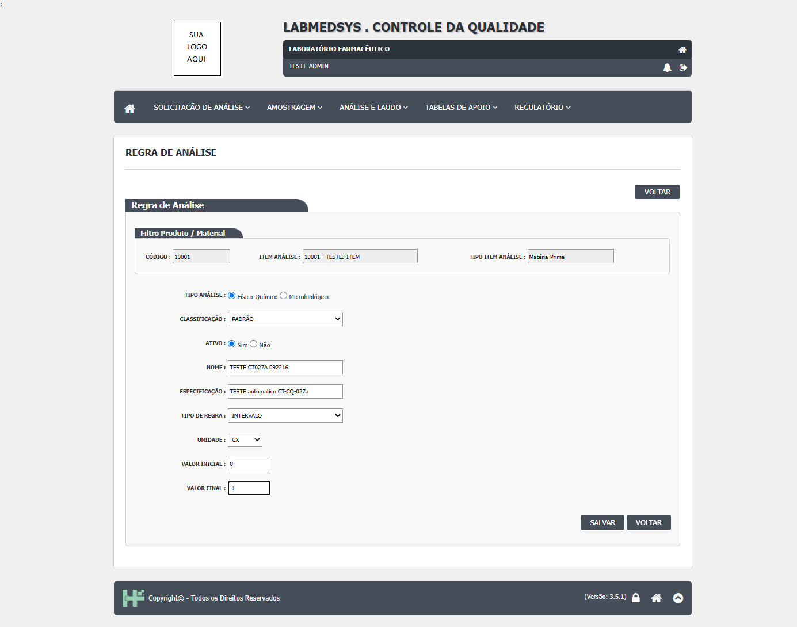
Figura 1: Formulário preenchido com mínimo 0 e máximo -1, antes de salvar
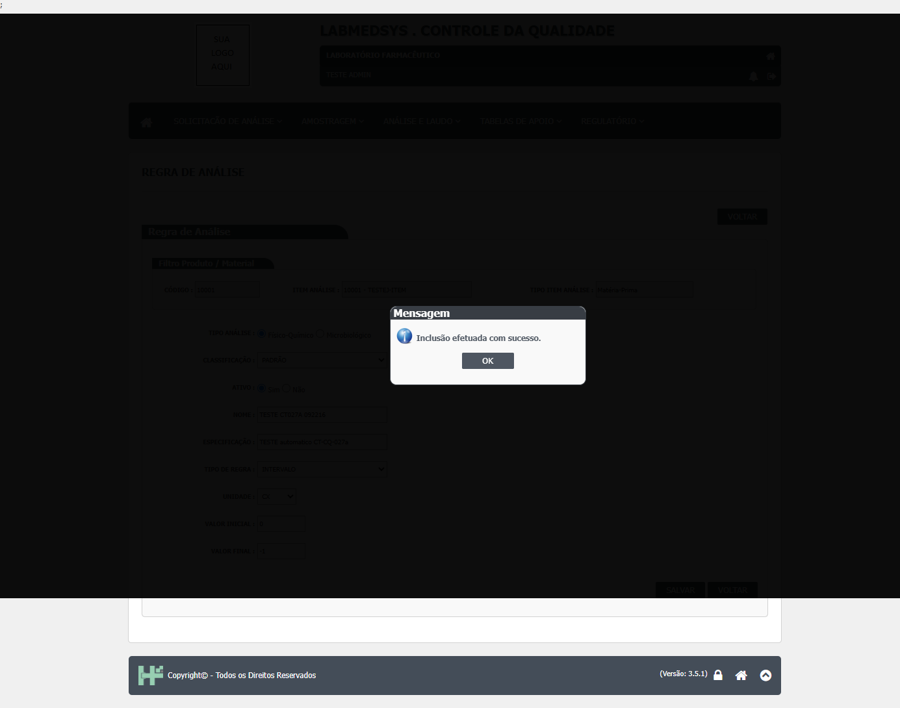
Figura 2: Depois de SALVAR: "Inclusão efetuada com sucesso."
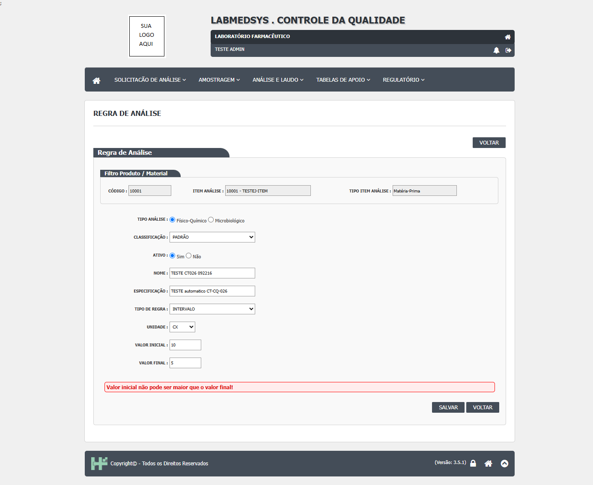
Figura 3: Para comparar: com mínimo 10 e máximo 5 o sistema recusa corretamente
Onde está no código
Causa (confirmada): a conferência fica dentro de if (valorInicial > 0 && valorFinal > 0). Fora dessa condição nada é conferido. Além disso, compara os valores sem o sinal (Math.Abs), o que esconde negativos mesmo dentro da condição. O controlador só recusa quando os dois valores são zero, então um limite só (mínimo sem máximo) é aceito.
| Arquivo | Linhas | O que faz |
|---|---|---|
HSolutions.CQ.Domain/Analise/RegraAnalise.cs |
62-70 | InformarValorInicial: só confere quando os dois valores são maiores que zero; compara com Math.Abs. |
HSolutions.CQ.Domain/Analise/RegraAnalise.cs |
73-81 | InformarValorFinal: mesma condição e mesma comparação sem sinal. |
HSolutions.CQ.UI/Areas/Coleta/Controllers/RegraAnaliseController.cs |
381-391 | Recusa só quando mínimo e máximo são ambos zero; qualquer outro caso segue para as funções acima. |
HSolutions.CQ.Domain/Analise/AnaliseItem.cs |
101, 121 | No ensaio da análise a conferência é diferente (sem Math.Abs e aceitando máximo vazio): a mesma regra está escrita de dois jeitos. |
Caminhos a partir da pasta app/ do módulo (4.controle_qualidade/app).
Sugestão de correção
- Comparar os valores com sinal, sem
Math.Abs, e sempre que os dois limites forem informados: recusar quando mínimo > máximo, inclusive com zero ou negativo. - Tratar "não informado" como vazio (nulo), e não como zero, para que 0 seja um limite válido.
- Se o negócio aceitar limite de um lado só ("no mínimo 10" ou "no máximo 5"), deixar isso explícito na tela (por exemplo, tipos "Mínimo" e "Máximo") em vez de aceitar o campo em branco sem aviso. Ponto para validar com o CQ.
- Usar uma única função de conferência para a regra de análise e para o ensaio (
AnaliseItem.cs). - Conferir também no servidor (no controlador e no domínio), e não só na tela.
Como confirmar a correção
Repetir o CT-CQ-027 (mínimo 0 e máximo -1; mínimo 10 e máximo em branco) e o CT-CQ-026 (mínimo 10 e máximo 5). Acrescentar: mínimo -5 e máximo -20 (deve recusar) e mínimo -20 e máximo 5 (deve aceitar). O script homologacao/automacao/cq_piloto.py repete os dois primeiros sozinho.
Observações
O defeito já era previsto pela leitura do código (fluxo Regras de amostragem e de análise, ponto 4: "Limites inválidos passam") e foi confirmado na tela em 09/10/2026. A regra de negócio RN-CQ-064 diz que o tipo intervalo exige mínimo e máximo; o sistema exige só um dos dois. Reconfirmado em 23/10/2026 (rodada 1, CT-CQ-027 e CT-CQ-N-06): mínimo 0 e máximo -1 e também mínimo -5 e máximo -20 foram aceitos (a segunda regra com o mesmo nome também: DV-CQ-014).
DV-CQ-003
Quem não tem a função de chefe do CQ, e até o perfil só de consulta, consegue aprovar o laudo
| Gravidade | Situação | Tela | Caso de teste | Encontrado em | Norma afetada |
|---|---|---|---|---|---|
| Alta | Aberto | Controle da Qualidade › Análise e Laudo › Emissão Laudo Final | CT-CQ-011 e CT-CQ-071 (confirma o ponto 3 do fluxo e o SEG-CQ-02) | 23/10/2026 (rodada 1 do CQ) | RDC 658/2022, art. 8º, XV (só quem é qualificado e autorizado decide) |
| Tipo: acesso/segurança · Já estava no portal: não |
O que acontece
Na Emissão Laudo Final, o botão Aprovar aparece para qualquer usuário que abra a tela e a gravação não confere a função profissional de chefe (função 48). Foram aprovados laudos por um usuário sem nenhuma função profissional do CQ (017/26) e por um usuário de perfil só de consulta, sem as permissões de incluir, alterar ou excluir (015/26). O que a tela esconde para quem não tem a função é só o botão Emitir Laudo. A única barreira que funciona é "quem digitou o resultado não aprova" (CT-CQ-010 passou: "O Responsável pela aprovação precisa ser diferente dos analistas das análises.").
Como reproduzir
- Entrar com um usuário que não tem a função de chefe do CQ (por exemplo, o de perfil só de consulta).
- Abrir Análise e Laudo › Emissão Laudo Final e escolher uma análise digitada (situação "Liberar laudo").
- Clicar em Aprovar e confirmar com SIM.
Dados de teste usados: Solicitações 017/26 (aprovada por usuário sem função) e 015/26 (aprovada por usuário de perfil só de consulta); os dois usuários de teste do CQ criados nesta rodada (um sem função, outro só de consulta).
Esperado e obtido
| Esperado | Obtido |
|---|---|
| Recusar a decisão de quem não tem a função de chefe do CQ nem permissão de aprovar (mensagem clara), e deixar o botão escondido. | "Confirma APROVAR o laudo?" e depois "Alteração efetuada com sucesso."; o laudo ficou aprovado. |
Evidências
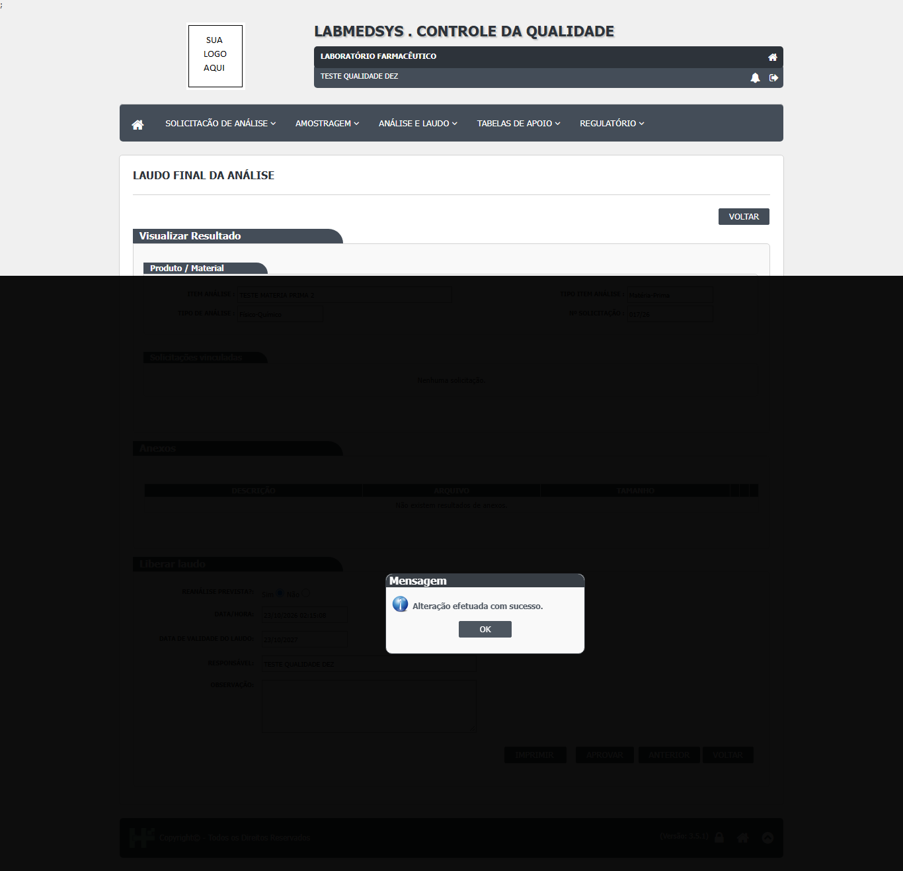
Figura 1: Usuário sem a função de chefe aprova a 017/26 ("Alteração efetuada com sucesso.").
Figura 2: Usuário de perfil só de consulta aprova a 015/26.
Onde está no código
| Arquivo | Linhas | O que faz |
|---|---|---|
HSolutions.CQ.UI/Areas/Analise/Controllers/EmissaoLaudoFinalController.cs |
967-1000 | A conferência da função de chefe (número fixo 48) existe numa rotina própria (UsuarioLogadoTemFuncaoChefeSubdiuvisao), mas aprovar, reprovar e emitir não conferem função nem pedem senha. |
HSolutions.CQ.UI/Areas/Analise/Controllers/EmissaoLaudoFinalController.cs |
441-467 | Aprovar: o botão só aparece com resultados dentro da especificação, mas a gravação não confere. |
Caminhos a partir da pasta app/ do módulo (4.controle_qualidade/app).
Sugestão de correção
- Conferir, na gravação (e não só na tela), que o usuário tem a função de chefe e a permissão de aprovar.
- Gravar quem aprovou e quando (hoje o laudo só mostra quem emitiu).
Como confirmar a correção
Repetir o(s) caso(s) CT-CQ-011 e CT-CQ-071 nos passos acima e conferir o esperado.
Observações
A conferência da função usa o número fixo 48 (ver DV-CQ-022).
DV-CQ-004
Basta clicar em Reprovar para o Estoque marcar o lote como REPROVADO, mesmo sem o laudo ser emitido
| Gravidade | Situação | Tela | Caso de teste | Encontrado em | Norma afetada |
|---|---|---|---|---|---|
| Alta | Aberto | Controle da Qualidade › Emissão Laudo Final e Estoque › Controle da Qualidade (Atualizar resultado) | CT-CQ-013 (ponto 4 do fluxo) | 23/10/2026 (rodada 1 do CQ) | RDC 658/2022 (decisão sobre o lote só depois do laudo emitido e assinado) |
| Tipo: norma · Já estava no portal: não |
O que acontece
Depois de Reprovar a análise da 018/26 (teor 120, limite de 95 a 105), sem emitir o laudo, o botão Atualizar resultado do Estoque trouxe o lote TESTECQ002 como REPROVADO. Para a aprovação o contrário acontece: a 017/26, aprovada e com laudo emitido, só virou APROVADA no Estoque depois de Atualizar resultado (CT-CQ-014 passou: antes disso o Estoque continuou em SOLICITADO, o CQ não avisa). Ou seja, a reprovação vale sem laudo; a aprovação não.
Como reproduzir
- No CQ, deixar uma análise fora da especificação em "Liberar laudo" e clicar em Reprovar (sem emitir o laudo).
- No Estoque, abrir Controle da Qualidade, procurar o item de entrada da análise e clicar em Atualizar resultado.
Dados de teste usados: Solicitação 018/26, item de entrada TA0024/26, lote TESTECQ002.
Esperado e obtido
| Esperado | Obtido |
|---|---|
| O Estoque só aceita "reprovado" com o laudo emitido, como faz com "aprovado". | A situação do lote passou de SOLICITADO para REPROVADO sem laudo emitido. |
Evidências
Figura 1: Reprovar a 018/26 no CQ ("Alteração efetuada com sucesso.").
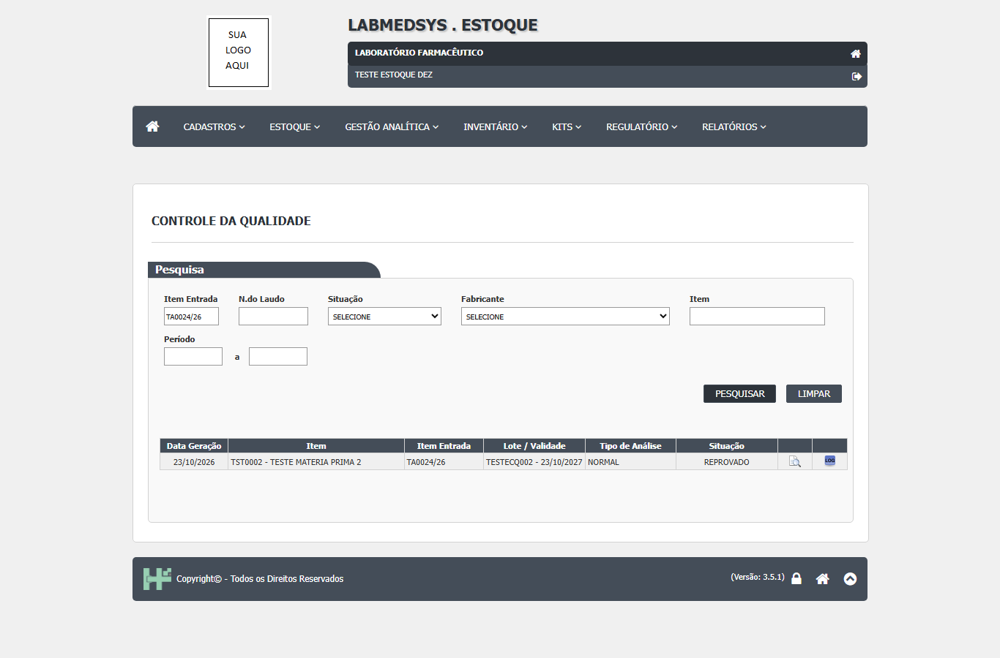
Figura 2: Estoque depois de Atualizar resultado: REPROVADO.
Sugestão de correção
- Aplicar à reprovação a mesma regra da aprovação (só com laudo emitido) ou exigir a decisão assinada.
Como confirmar a correção
Repetir o(s) caso(s) CT-CQ-013 nos passos acima e conferir o esperado.
DV-CQ-005
O laudo pode ser reprovado sem informar o motivo
| Gravidade | Situação | Tela | Caso de teste | Encontrado em | Norma afetada |
|---|---|---|---|---|---|
| Alta | Aberto | Controle da Qualidade › Análise e Laudo › Emissão Laudo Final | Caso novo CT-CQ-N-38 (confirma a falha apontada pelo inventário: "reprova sem motivo"; DV-EST-027 já tinha visto o mesmo) | 23/10/2026 (rodada 1 do CQ) | RDC 658/2022, arts. 125 e 258, VIII (registro e justificativa da decisão) |
| Tipo: norma · Já estava no portal: não |
O que acontece
Com o resultado fora da especificação (teor 130, limite de 90 a 110) e o campo Observação do laudo em branco, o botão Reprovar é aceito: "Confirma REPROVAR o laudo?" e "Alteração efetuada com sucesso.". Não há campo de motivo nem confere a observação.
Como reproduzir
- Ter uma análise com resultado fora da faixa em "Liberar laudo".
- Abrir Emissão Laudo Final dessa análise, deixar a Observação vazia e clicar em Reprovar.
Dados de teste usados: Solicitação 019/26 (produto acabado, item de entrada TA0025/26).
Esperado e obtido
| Esperado | Obtido |
|---|---|
| Exigir motivo (e gravar quem reprovou) antes de reprovar. | Reprovou sem motivo. |
Evidências
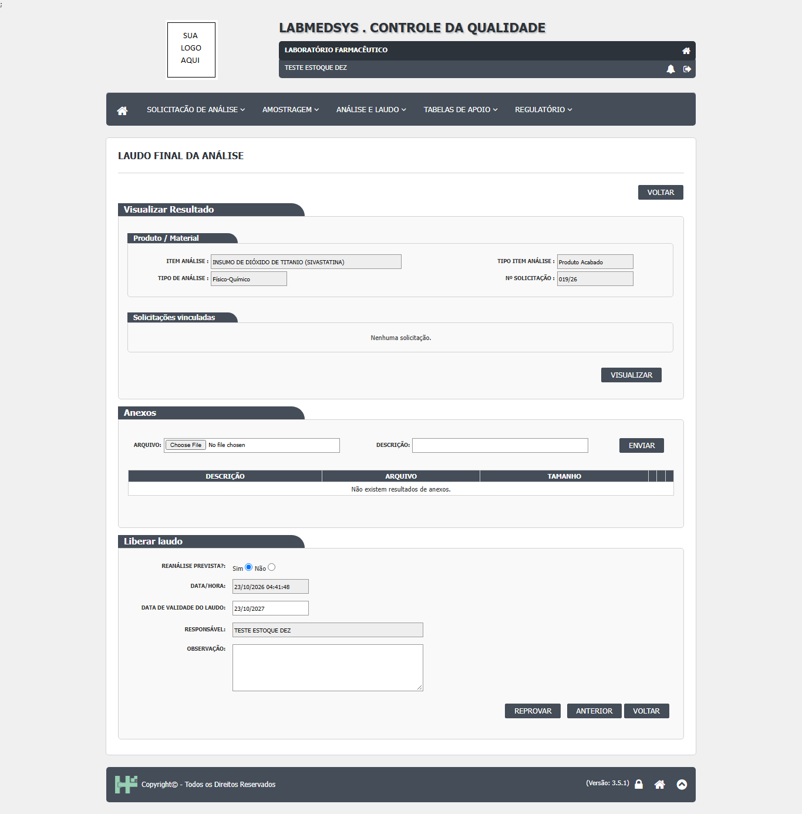
Figura 1: Laudo da 019/26 com a Observação em branco, antes de Reprovar.
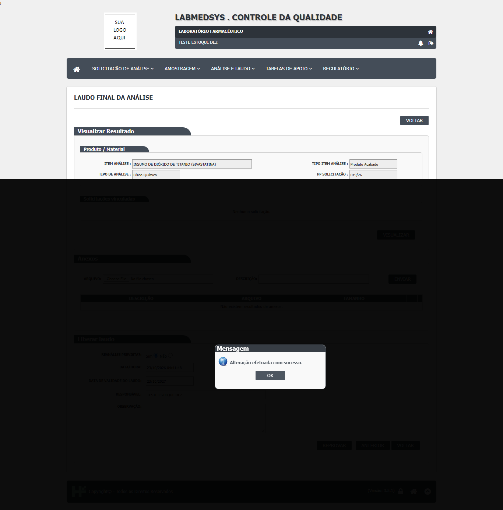
Figura 2: Resultado: "Alteração efetuada com sucesso.".
Onde está no código
| Arquivo | Linhas | O que faz |
|---|---|---|
HSolutions.CQ.UI/Areas/Analise/Controllers/EmissaoLaudoFinalController.cs |
489-506 | ReprovarLaudo: grava "não aprovado" e a observação; não exige motivo nem grava quem decidiu. |
Caminhos a partir da pasta app/ do módulo (4.controle_qualidade/app).
Sugestão de correção
- Tornar o motivo obrigatório na reprovação e gravar usuário, data e motivo.
Como confirmar a correção
Repetir o(s) caso(s) Caso novo CT-CQ-N-38 nos passos acima e conferir o esperado.
DV-CQ-006
Aprovar, emitir e corrigir resultado não deixam histórico: a consulta de log vem vazia ou só mostra a inclusão
| Gravidade | Situação | Tela | Caso de teste | Encontrado em | Norma afetada |
|---|---|---|---|---|---|
| Alta | Aberto | Controle da Qualidade › Solicitação de Análise, Consultar Análise Programada e Emissão Laudo Final (ícone Log) | CT-CQ-015 e CT-CQ-016 (ponto 2 do fluxo) | 23/10/2026 (rodada 1 do CQ) | RDC 658/2022, arts. 125 e 258, VIII (rastreabilidade: quem, o quê, quando e por quê); Guia 33/2020 (integridade de dados) |
| Tipo: norma · Já estava no portal: não |
O que acontece
Depois de aprovar, emitir o laudo e atualizar a 017/26, o log da solicitação mostra só a inclusão feita pelo Estoque (22/10 e 23/10, sem os atos do CQ) e o log da análise diz "NÃO EXISTE LOG DE ALTERAÇÃO PARA ESTE REGISTRO." Na 018/26, o teor foi corrigido de 120 para 100 pela Emissão Laudo Final: a tela exigiu justificativa e disse "Alteração efetuada com sucesso.", o valor mudou, mas o log do ensaio também respondeu "NÃO EXISTE LOG DE ALTERAÇÃO PARA ESTE REGISTRO." (as duas linhas do ensaio). Quem aprovou e quem reprovou não é gravado.
Como reproduzir
- Aprovar, emitir e atualizar uma análise; clicar no ícone Log da solicitação e da análise.
- Em Emissão Laudo Final › Anterior, corrigir o teor de um ensaio (lápis), informar a justificativa e salvar; abrir o ícone Log do ensaio.
Dados de teste usados: Solicitações 017/26 (aprovar e emitir) e 018/26 (correção do teor).
Esperado e obtido
| Esperado | Obtido |
|---|---|
| Cada decisão e cada correção com usuário, data, valor antigo, valor novo e justificativa. | Log vazio ou só com a inclusão. |
Evidências
Figura 1: Log da solicitação 017/26: só a inclusão.
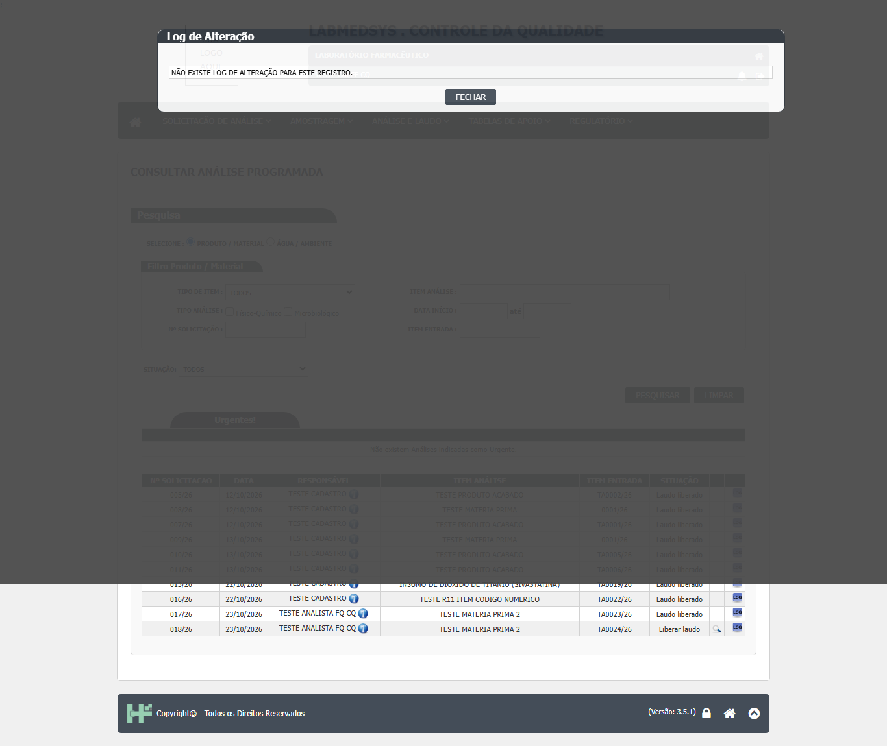
Figura 2: Log da análise: "NÃO EXISTE LOG".
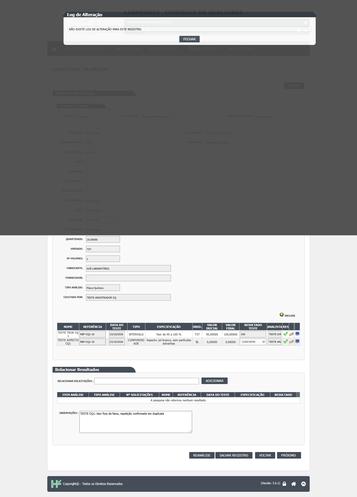
Figura 3: Log do ensaio corrigido: vazio.
Onde está no código
| Arquivo | Linhas | O que faz |
|---|---|---|
HSolutions.CQ.UI/Areas/Analise/Controllers/EmissaoLaudoFinalController.cs |
489-506, 996-1011 | Aprovar, reprovar e emitir gravam sem chamar o registro de histórico. |
HSolutions.CQ.Domain/Analise/LiberarLaudoService.cs |
40-44 | Emitir o laudo muda a situação da análise e da solicitação, sem histórico. |
Caminhos a partir da pasta app/ do módulo (4.controle_qualidade/app).
Sugestão de correção
- Gravar no histórico aprovar, reprovar, emitir, corrigir resultado, programar e registrar, sem depender da biblioteca de log funcionar só em parte.
Como confirmar a correção
Repetir o(s) caso(s) CT-CQ-015 e CT-CQ-016 nos passos acima e conferir o esperado.
Observações
O log das regras de análise funciona (CT-CQ-031 mostra valor antigo, novo, usuário e justificativa); o problema é das ações do laudo e da análise.
DV-CQ-007
Uma solicitação com laudo liberado pode ser cancelada; o cancelamento mostra "Ocorreu um erro inesperado." e não fica no histórico
| Gravidade | Situação | Tela | Caso de teste | Encontrado em | Norma afetada |
|---|---|---|---|---|---|
| Alta | Aberto | Controle da Qualidade › Solicitação de Análise › Detalhar › Cancelar | CT-CQ-017 e caso novo CT-CQ-N-31 (ponto 6 do fluxo) | 23/10/2026 (rodada 1 do CQ) | RDC 658/2022 (laudo emitido não pode ser desfeito sem registro; rastreabilidade) |
| Tipo: norma · Já estava no portal: não |
O que acontece
A solicitação 016/26, com laudo liberado, foi cancelada com a justificativa "ab". A tela respondeu "Ocorreu um erro inesperado.", mas a situação virou Cancelada e a lista continuou mostrando "Laudo Liberado" (DV-CQ-021). O log da solicitação não traz o cancelamento. A mesma mensagem apareceu ao cancelar a 023/26 (água), com justificativa completa, e ela também ficou Cancelada.
Como reproduzir
- Abrir Solicitação de Análise e Detalhar uma solicitação com situação "Laudo Liberado".
- Clicar em Cancelar, confirmar, escrever a justificativa e confirmar.
Dados de teste usados: Solicitações 016/26 (laudo liberado) e 023/26 (água para injetáveis).
Esperado e obtido
| Esperado | Obtido |
|---|---|
| Recusar o cancelamento de laudo liberado e, nos demais casos, gravar o cancelamento com justificativa e usuário. | Erro genérico, solicitação cancelada, log sem o cancelamento. |
Evidências
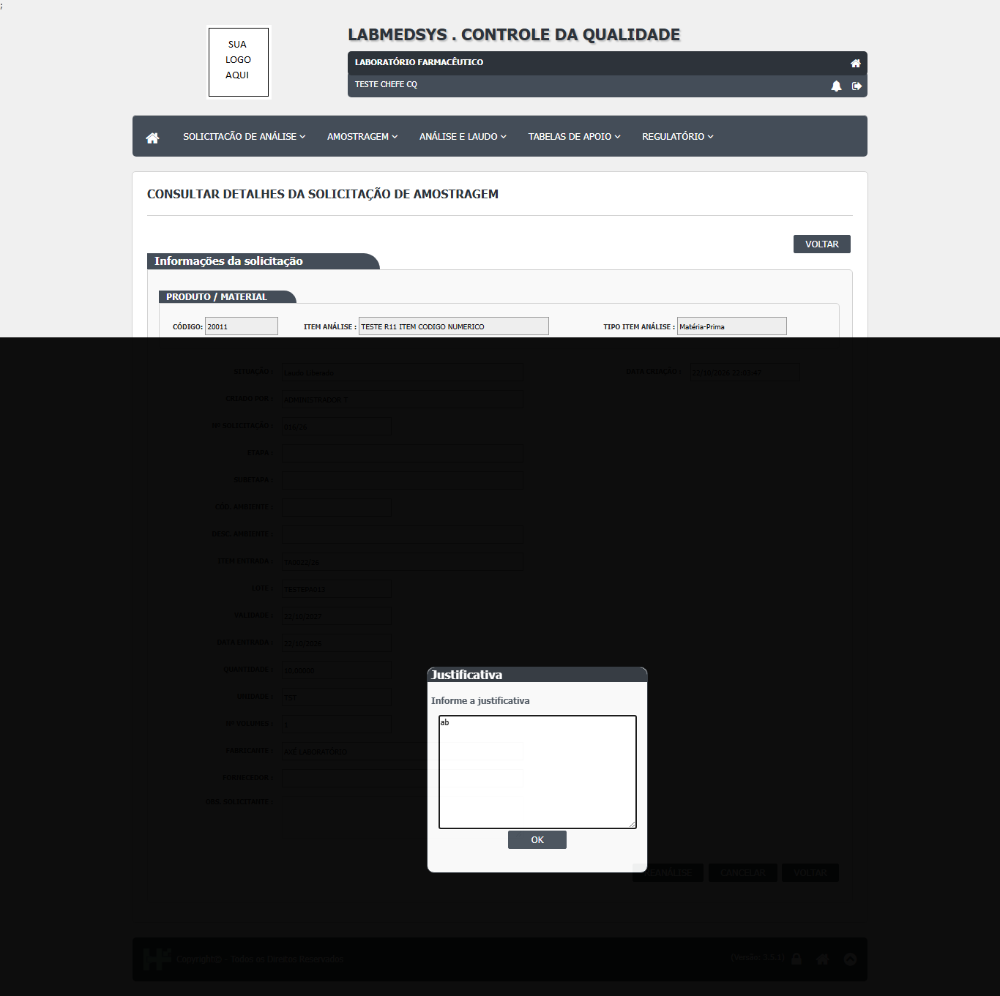
Figura 1: Justificativa "ab" na 016/26.
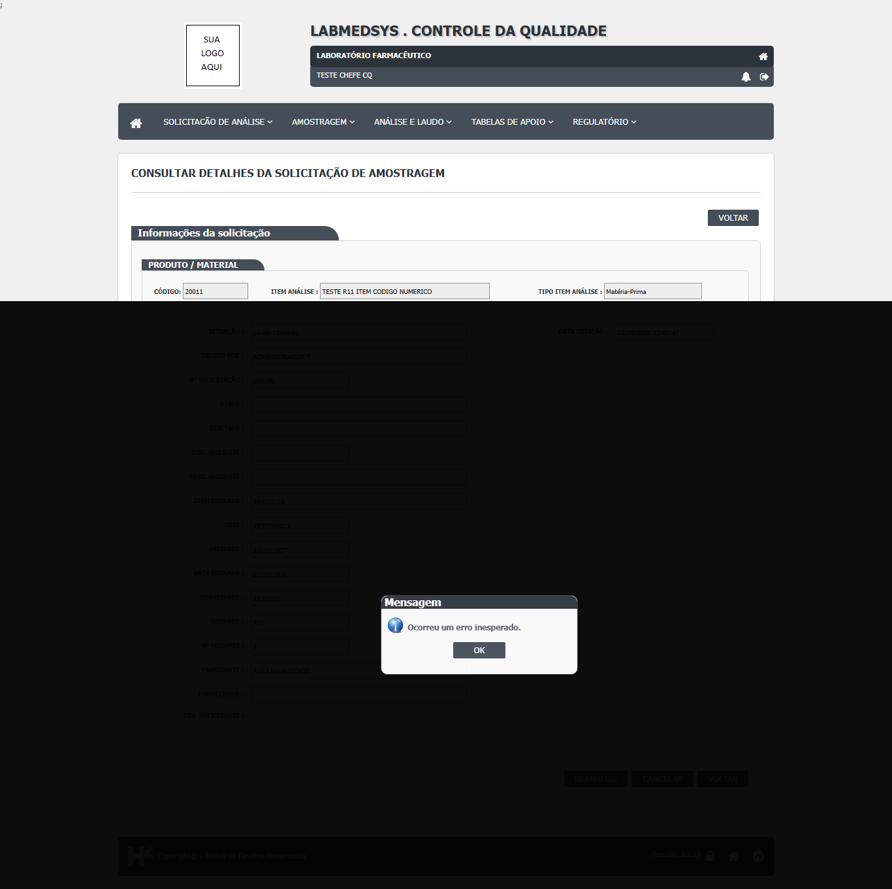
Figura 2: "Ocorreu um erro inesperado.".
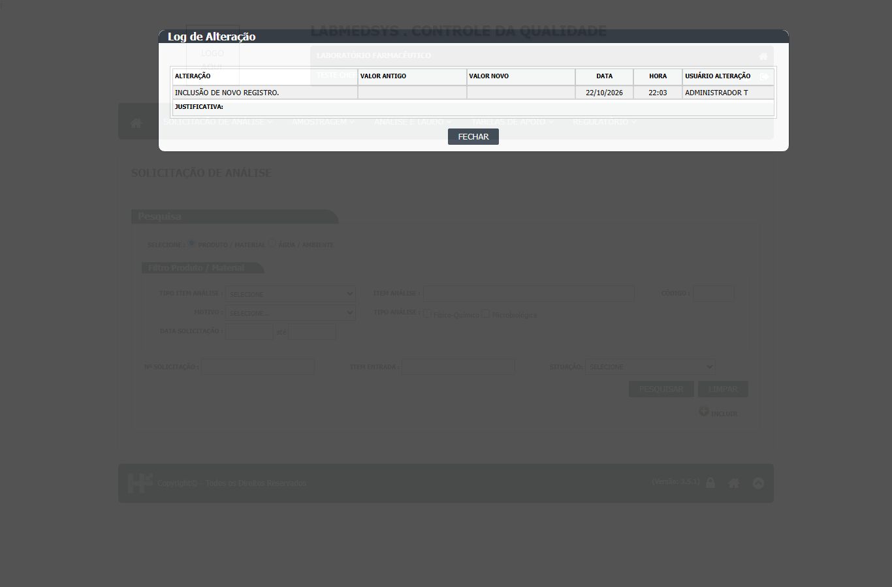
Figura 3: Log só com a inclusão.
Onde está no código
| Arquivo | Linhas | O que faz |
|---|---|---|
HSolutions.CQ.Domain/SolicitacaoAnalise/CancelarSolicitacaoAnaliseService.cs |
11-16 | Só recusa se a solicitação já estiver cancelada ou concluída; a mensagem diz "diferente de pendente", mas laudo liberado passa. |
HSolutions.CQ.UI/Areas/SolicitacaoAnalise/Controllers/SolicitacaoAnaliseController.cs |
378-386 | Cancelar e gravar; o histórico do cancelamento falha com justificativa curta. |
Caminhos a partir da pasta app/ do módulo (4.controle_qualidade/app).
Sugestão de correção
- Bloquear o cancelamento depois do laudo emitido; corrigir o erro de gravação do histórico; exigir justificativa mínima.
Como confirmar a correção
Repetir o(s) caso(s) CT-CQ-017 e caso novo CT-CQ-N-31 nos passos acima e conferir o esperado.
Observações
A 016/26 era a solicitação do lote TESTEPA013 (massa do Estoque, rodada 11); não é mais usada.
DV-CQ-008
Água: a Programação de Amostragem de qualquer ponto de água quebra com erro de servidor porque falta uma tabela no banco; a agenda de água também não carrega
| Gravidade | Situação | Tela | Caso de teste | Encontrado em | Norma afetada |
|---|---|---|---|---|---|
| Alta | Aberto | Controle da Qualidade › Programação de Amostragem (água) e Programação de Solicitação de Análise (agenda) | CT-CQ-064 e CT-CQ-066 (bloqueados), casos novos CT-CQ-N-32 e N-33; explica o DV-CQ-001 | 23/10/2026 (rodada 1 do CQ) | RDC 658/2022 (monitoramento de água para fins farmacêuticos) |
| Tipo: ambiente/dados · Já estava no portal: não |
O que acontece
Ao abrir a programação da amostragem de uma solicitação de água (potável, purificada ou para injetáveis), o servidor devolve a página de erro técnica com "Invalid object name 'dbo.TBL_TIPO_AGUA'": a tabela de tipo de água, ligada aos pontos de água do Principal, não existe no banco. Por isso nenhuma solicitação de água anda; a agenda de água também dá "Ocorreu um erro interno não esperado." (DV-CQ-001), mesmo com pontos de água novos e ativos. Água de ambiente (salas) funciona.
Como reproduzir
- Criar, em Solicitação de Análise › Incluir › Água / Ambiente, uma solicitação de água purificada.
- Abrir Programação de Amostragem, filtro Água / Ambiente, e clicar em programar a solicitação: página de erro.
Dados de teste usados: Pontos de água de teste TST-CQ-PUR, TST-CQ-POT e TST-CQ-INJ; solicitações 020/26 a 023/26.
Esperado e obtido
| Esperado | Obtido |
|---|---|
| Programar a amostragem e seguir o ciclo (amostragem, análise, laudo). | Página de erro de servidor com o nome da tabela; ciclo de água bloqueado. |
Evidências
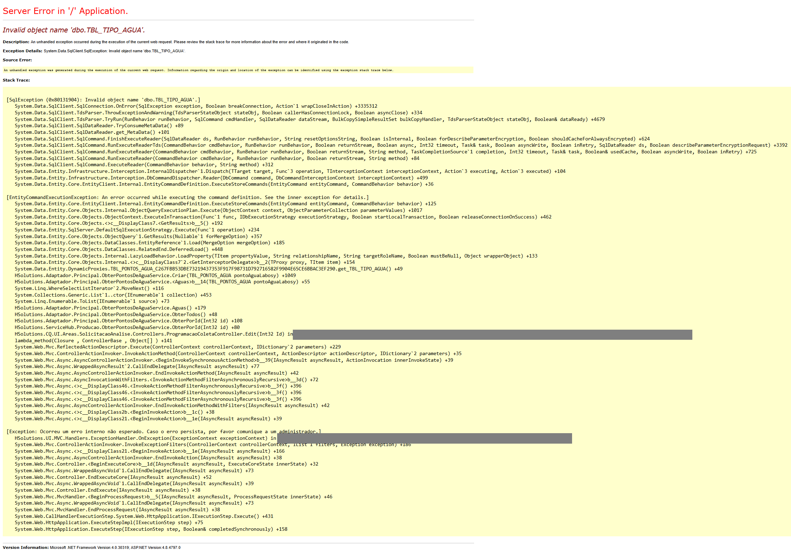
Figura 1: Erro técnico (contém caminhos e nomes internos: confidencial).
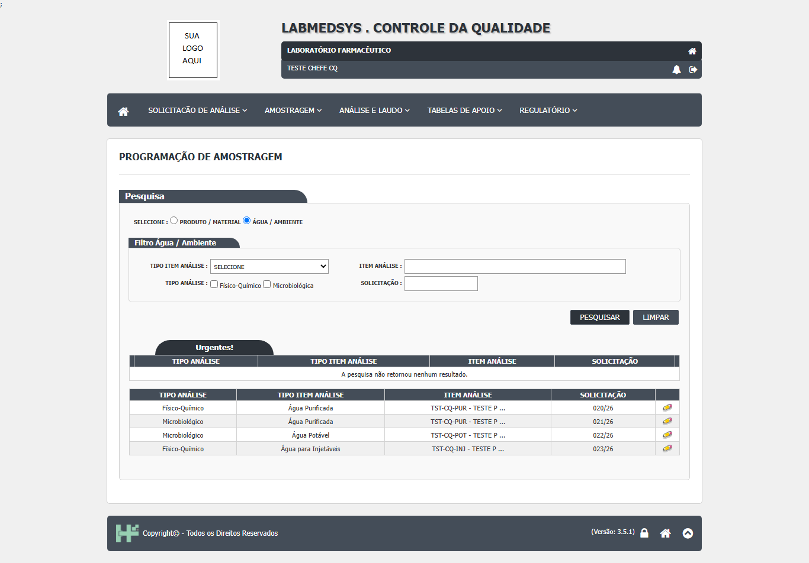
Figura 2: Lista com as quatro solicitações de água que não podem ser programadas.
Onde está no código
Causa (provável): o servidor devolveu a página de erro "Invalid object name 'dbo.TBL_TIPO_AGUA'": o banco consultado não tem a tabela de tipo de água, que o cadastro de pontos de água usa. A tabela está nos scripts dos projetos de banco do Principal e do CQ, então o mais provável é que não tenha sido criada (ou esteja com outro nome) no banco do ambiente de teste. Leitura tirada da mensagem do servidor; a confirmar com o DBA.
| Arquivo | Linhas | O que faz |
|---|---|---|
HSolutions.CQ.UI/Areas/SolicitacaoAnalise/Controllers/ProgramacaoColetaController.cs |
67 | Linha onde a página de erro aponta: busca o ponto de água (AguaService.ObterPorId), que lê o tipo de água do ponto no banco do Principal. |
HSolutions.CQ.DB/Tables/TBL_TIPO_AGUA.sql |
Script da tabela de tipo de água no projeto de banco do CQ (o do Principal fica em 1.principal, Hsolutions.Principal.DB/Tables/TBL_TIPO_AGUA.sql): a tabela está descrita nos scripts, mas o banco de teste respondeu que ela não existe. |
Caminhos a partir da pasta app/ do módulo (4.controle_qualidade/app).
Sugestão de correção
- O DBA conferir se a tabela de tipo de água existe no banco de teste (e no de produção, quando houver) e criá-la a partir do script do projeto de banco, ou ajustar o nome no mapeamento.
- Criar a tabela (ou ajustar o mapeamento) de tipo de água, ou tirar a leitura do tipo no cadastro dos pontos; esconder a página técnica de erro.
Como confirmar a correção
Repetir o(s) caso(s) CT-CQ-064 e CT-CQ-066 nos passos acima e conferir o esperado.
Observações
A captura publicada tem cobertos (retângulo cinza) os caminhos de arquivo do computador do desenvolvedor; ficam o nome da tabela e o rastro de chamadas. Conclusão de causa tirada da mensagem do servidor; só o DBA confirma. Os casos CT-CQ-064 e 066 voltam a ser testados quando a tabela existir.
DV-CQ-009
Ambiente: a digitação diz "Alteração efetuada com sucesso." mas não grava o resultado, e o laudo oferece só Aprovar
| Gravidade | Situação | Tela | Caso de teste | Encontrado em | Norma afetada |
|---|---|---|---|---|---|
| Alta | Aberto | Controle da Qualidade › Consultar Análise Programada (ambiente) e Emissão Laudo Final | Caso novo CT-CQ-N-37 (afeta CT-CQ-065) | 23/10/2026 (rodada 1 do CQ) | RDC 658/2022 (resultados do controle ambiental devem ser registrados e rastreáveis) |
| Tipo: funcional · Já estava no portal: não |
O que acontece
Na análise de ambiente da sala PRD-PES-01 (024/26), foram digitados 150 UFC (limite 100) e NÃO CONFORME, com referência e data. A tela mostrou "Alteração efetuada com sucesso."; ao reabrir, referência, data e resultado estão vazios e só a observação ficou. A análise saiu da lista do analista e, na Emissão Laudo Final, ficou só o botão Aprovar (sem Reprovar). Repetido uma segunda vez, com o mesmo resultado. O boletim de ambiente impresso sai com a coluna Resultado em branco.
Como reproduzir
- Registrar a amostragem de uma solicitação de ambiente e programar a análise (analista microbiológico).
- Em Consultar Análise Programada, abrir a análise, preencher referência, data e resultado dos dois ensaios e Salvar Registro.
- Abrir a análise de novo e conferir os campos.
Dados de teste usados: Solicitação 024/26 (sala PRD-PES-01, microbiológico); regras de análise "TESTE AMBIENTE UFC R1" e "TESTE AMBIENTE AUSENCIA R1".
Esperado e obtido
| Esperado | Obtido |
|---|---|
| Gravar o resultado digitado e, estando fora do limite, oferecer Reprovar. | Resultado perdido, mensagem de sucesso, laudo com Aprovar. |
Evidências
Figura 1: Resultados preenchidos antes de salvar.
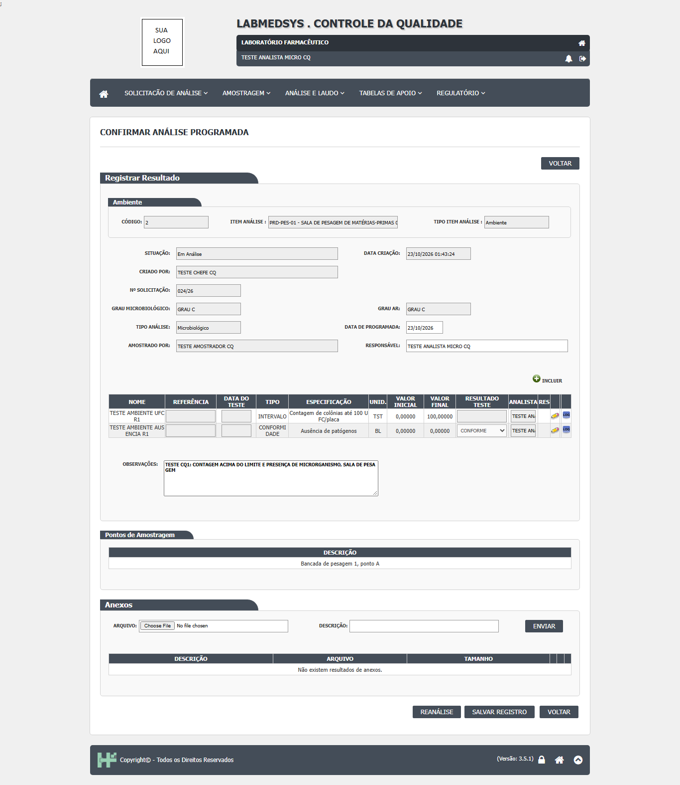
Figura 2: Análise reaberta: resultados vazios.
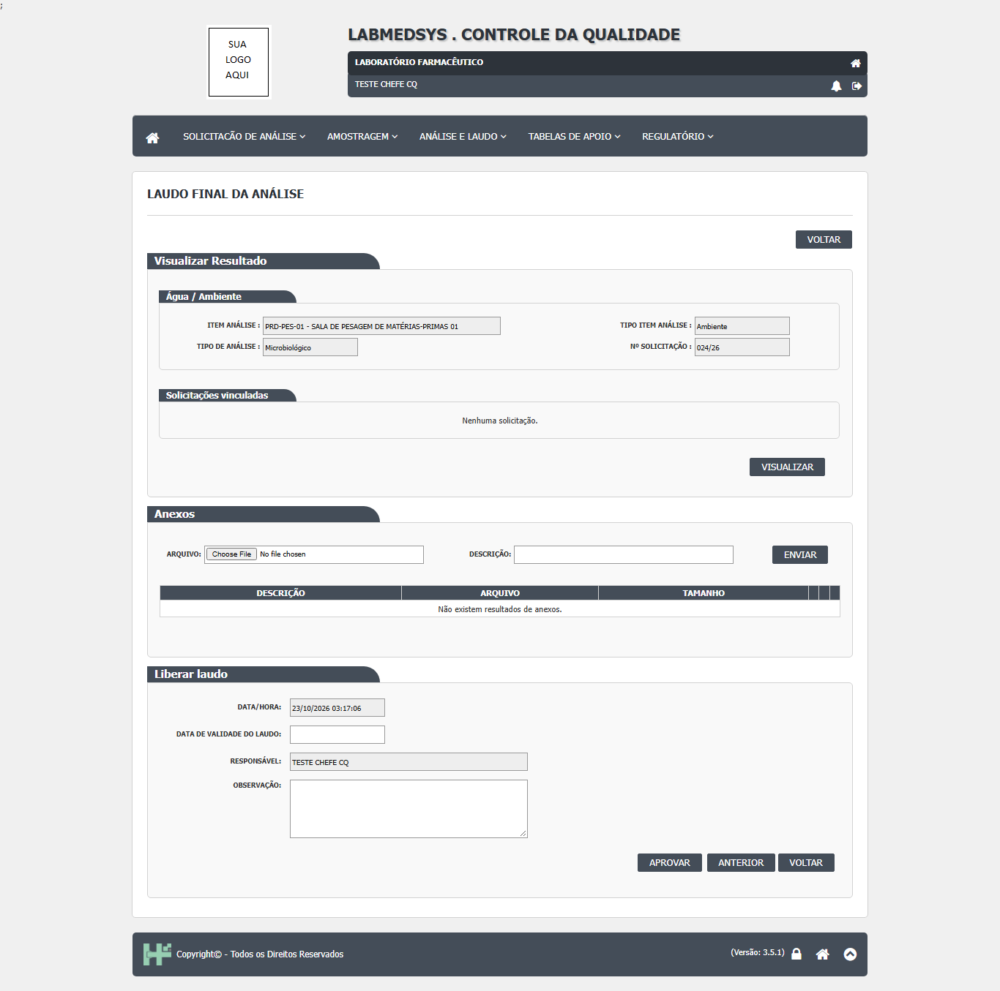
Figura 3: Emissão Laudo Final do ambiente: só Aprovar.
Sugestão de correção
- Corrigir a gravação dos ensaios de ambiente e conferir os resultados antes do laudo.
Como confirmar a correção
Repetir o(s) caso(s) Caso novo CT-CQ-N-37 nos passos acima e conferir o esperado.
Observações
Pode ser específico do tipo de item "Ambiente" (a digitação de matéria-prima e produto acabado gravou normalmente).
DV-CQ-001
Programação de Solicitação de Análise dá erro interno ao carregar os pontos de água
| Gravidade | Situação | Tela | Caso de teste | Encontrado em | Norma afetada |
|---|---|---|---|---|---|
| Média | Aberto | Controle da Qualidade › Solicitação de Análise › Programação de Solicitação de Análise | CT-CQ-063 | 09/10/2026 (teste automático; repetido à mão em 10/10/2026) | RDC 658/2022, art. 243, VI (dados de monitoramento de água disponíveis ao CQ) |
| Tipo: ambiente/dados · Já estava no portal: sim |
O que acontece
Ao escolher um tipo de água e clicar em CARREGAR, a agenda aparece, mas a lista de pontos a programar fica vazia e surge a janela "Erro: Ocorreu um erro interno não esperado.". Sem a lista, não é possível programar coletas de água pelo CQ. Os pontos existem e estão ativos no cadastro do Principal (CADASTRO DE PONTOS DE ÁGUA: PTA-PW-01 purificada, PTA-POT-01 potável, TST-PA1 de teste).
Como reproduzir
- Entrar no módulo Controle da Qualidade e abrir Solicitação de Análise › Programação de Solicitação de Análise.
- Em TIPO ITEM ANÁLISE, escolher ÁGUA POTÁVEL (ou ÁGUA PURIFICADA).
- Em TIPO ANÁLISE, marcar Físico-Químico (ou Microbiológico).
- Clicar em CARREGAR.
Dados de teste usados: nenhum dado criado; pontos de água já cadastrados no Principal.
Esperado e obtido
| Esperado | Obtido |
|---|---|
| A lista de pontos de água do tipo escolhido, para programar as coletas na agenda; se não houver pontos, uma mensagem clara como "Nenhum ponto de água cadastrado para este tipo". | "Erro: Ocorreu um erro interno não esperado." A agenda do mês aparece vazia e a lista de pontos não aparece. Repetiu-se com ÁGUA POTÁVEL + Físico-Químico e com ÁGUA PURIFICADA + Microbiológico. |
Evidências
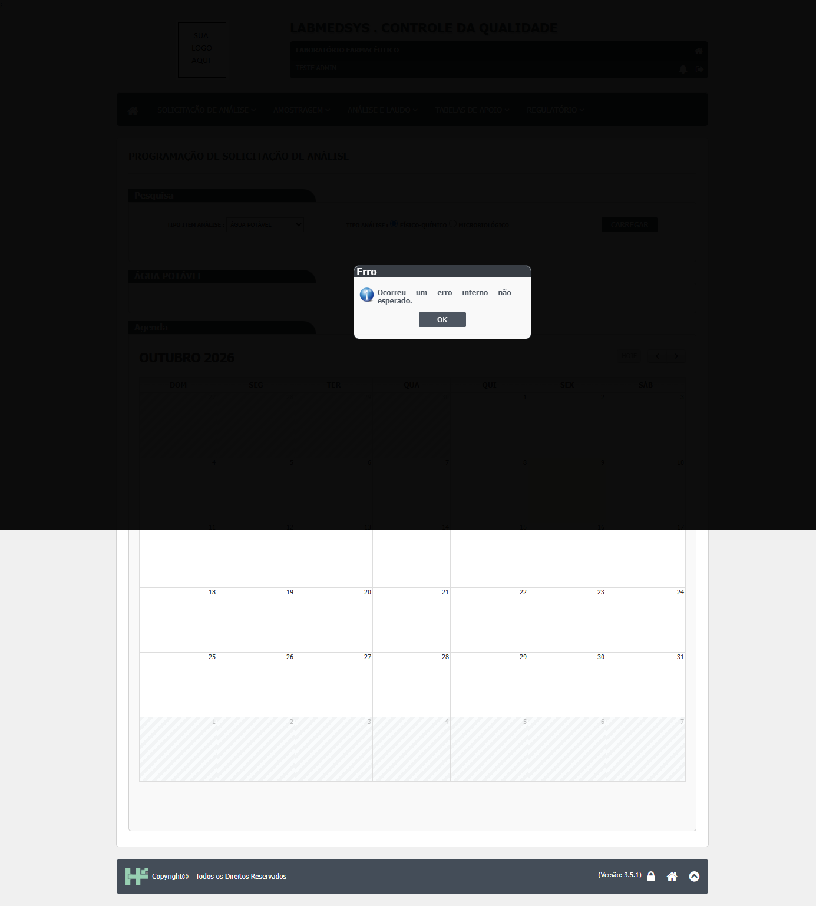
Figura 1: ÁGUA POTÁVEL + Físico-Químico: janela de erro depois de CARREGAR
Onde está no código
Causa (provável): a mensagem "Ocorreu um erro interno não esperado." só aparece quando a chamada ao servidor falha (erro HTTP). A agenda usa outra mensagem e abriu; logo, quem falha é a ação que lista os pontos. Ela grava no registro de erros do servidor uma linha começando por "Consulta de itens programáveis:", com a causa exata. Duas hipóteses: (1) o serviço de integração que traz os pontos de água do Principal está fora do ar ou mal configurado; (2) falta no banco a tabela TBL_TIPO_AGUA_CQ, que o código usa e os scripts do projeto de banco não criam (eles criam TBL_TIPO_AGUA).
| Arquivo | Linhas | O que faz |
|---|---|---|
HSolutions.CQ.UI/Scripts/CQApi.js |
20-21 | Em qualquer erro da chamada, mostra a mensagem genérica, sem o motivo. |
HSolutions.CQ.UI/Areas/SolicitacaoAnalise/Controllers/ProgramacaoSolicitacaoController.cs |
74-99 | ListarItensProgramaveis: em erro, registra "Consulta de itens programáveis:" no log e relança a exceção. |
HSolutions.CQ.Infrastructure/SolicitacaoAnalise/ItensProgramaveisService.cs |
49-66 | Busca o tipo de água no banco do CQ (ObterAguaPorId) e os pontos pelo serviço de integração; não trata retorno nulo antes de percorrer a lista (linha 66). |
HSolutions.CQ.Infrastructure/SolicitacaoAnalise/ItensProgramaveisService.cs |
95-120 | Chamadas ao serviço de pontos de água (ObterPurificadas, ObterPotaveis, ObterParainjetavel). |
Caminhos a partir da pasta app/ do módulo (4.controle_qualidade/app).
Sugestão de correção
- Primeiro, ler o registro de erros do servidor do CQ de 09/10/2026, por volta das 22h16, procurando "Consulta de itens programáveis:". Ele diz qual das hipóteses vale.
- Se for a tabela: criar
TBL_TIPO_AGUA_CQ(e as demais tabelas com_CQlistadas emhomologacao/4.controle_qualidade/06-modelo-de-dados.md, seção 7) ou alinhar o nome no mapeamento do código. - Se for a integração: conferir a configuração e o funcionamento do serviço de pontos de água do Principal.
- Tratar retorno vazio ou nulo do serviço: mostrar "Nenhum ponto cadastrado para este tipo" em vez de quebrar.
- Trocar a mensagem genérica por uma que diga o que falhou (sem expor detalhes técnicos ao usuário) e manter o detalhe no registro de erros.
Como confirmar a correção
Repetir o CT-CQ-063 (procurar a opção de frequência de coleta) e os casos de água e ambiente CT-CQ-060 a 068, que hoje estão bloqueados por este defeito. Conferir com ÁGUA POTÁVEL, ÁGUA PURIFICADA e um tipo de ambiente.
Observações
Falta testar um tipo de ambiente, que usa outro serviço; se ele carregar, a hipótese da tabela de tipo de água fica mais forte. Reconfirmado em 23/10/2026 (rodada 1, CT-CQ-063 e CT-CQ-N-33) com pontos de água novos e ativos, para água potável e purificada, físico-química e microbiológica; a agenda de ambiente carrega. A causa provável é a do DV-CQ-008 (falta a tabela de tipo de água no banco de teste; a confirmar com o DBA).
DV-CQ-010
Programar a amostragem duas vezes para a mesma solicitação cria duas amostragens pendentes
| Gravidade | Situação | Tela | Caso de teste | Encontrado em | Norma afetada |
|---|---|---|---|---|---|
| Média | Aberto | Controle da Qualidade › Programação de Amostragem | CT-CQ-004 | 23/10/2026 (rodada 1 do CQ) | RDC 658/2022 (uma amostragem por lote e análise; evitar duplicidade de registro) |
| Tipo: norma · Já estava no portal: não |
O que acontece
A solicitação 014/26 já estava Em Coleta. Abrir de novo a programação e salvar ("Alteração efetuada com sucesso.") criou uma segunda amostragem pendente (as amostragens de código 9 e 13 aparecem na visão do administrador). Duas pessoas poderiam registrar a mesma amostra duas vezes e descontar o estoque em duplicidade.
Como reproduzir
- Programar a amostragem de uma solicitação (situação passa a Em Coleta).
- Abrir a mesma programação outra vez e salvar com a mesma data e outro (ou o mesmo) responsável.
- Conferir Amostragens Pendentes Visão Administrador, situação PENDENTE.
Dados de teste usados: Solicitação 014/26 (produto acabado, lote TESTEPA011).
Esperado e obtido
| Esperado | Obtido |
|---|---|
| Recusar nova programação enquanto existir amostragem pendente ou programada. | Duas amostragens pendentes. |
Evidências
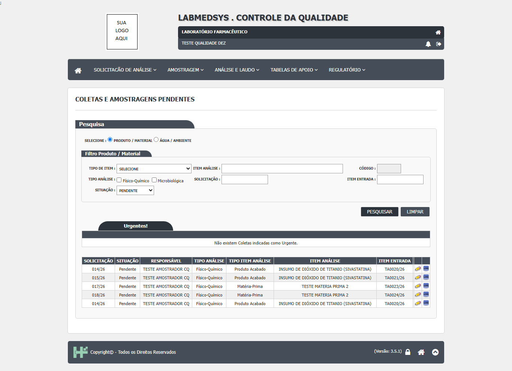
Figura 1: Duas amostragens pendentes da 014/26.
Sugestão de correção
- Conferir a situação da solicitação antes de programar.
Como confirmar a correção
Repetir o(s) caso(s) CT-CQ-004 nos passos acima e conferir o esperado.
DV-CQ-011
A tolerância "valor absoluto" é tratada como percentual e a regra "percentual" mostra o número como quantidade
| Gravidade | Situação | Tela | Caso de teste | Encontrado em | Norma afetada |
|---|---|---|---|---|---|
| Média | Aberto | Controle da Qualidade › Regra Amostragem e Registro de Amostragem | CT-CQ-023 | 23/10/2026 (rodada 1 do CQ) | RDC 658/2022 (quantidade de amostra conforme plano de amostragem aprovado) |
| Tipo: funcional · Já estava no portal: não |
O que acontece
Regra de valor absoluto 10, tolerância 5 (aceitável de 5 a 15 unidades): ao registrar 14 unidades, o resultado ficou negativo e a tela exigiu justificativa, ou seja, a tolerância foi lida como 5%. Em outra regra, percentual 10 % de um lote de 20 deveria sugerir 2 unidades, mas a coluna "Qtde. sugerida a amostrar" mostra 10,000 (o número da regra, sem converter) e amostrar 2 dá resultado negativo.
Como reproduzir
- Em Regra Amostragem, deixar a regra do item em "Por valor absoluto", quantidade 10 e tolerância 5.
- Em Registro de Amostragem de um lote desse item, informar 14 na quantidade amostrada, sem justificativa e salvar.
Dados de teste usados: Item TST0003, regra de amostragem do produto acabado (alterada para valor absoluto); solicitação 014/26 (amostragem 13). Regra percentual do item TST0002 (lote TESTECQ001).
Esperado e obtido
| Esperado | Obtido |
|---|---|
| Com valor absoluto, aceitar de 5 a 15 unidades; com percentual, sugerir 10 % do lote. | A tolerância virou 5% e o percentual não foi calculado. |
Evidências
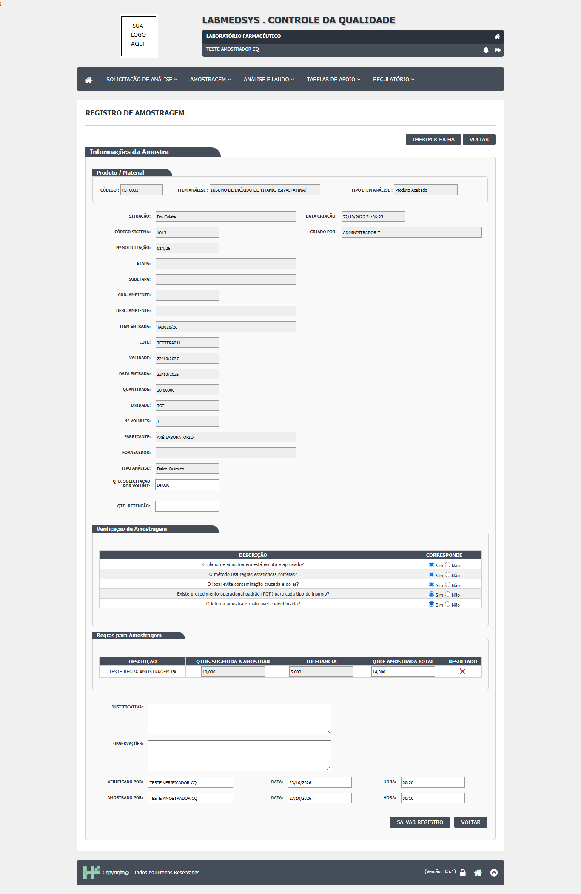
Figura 1: 14 unidades amostradas na regra absoluta 10 ± 5.
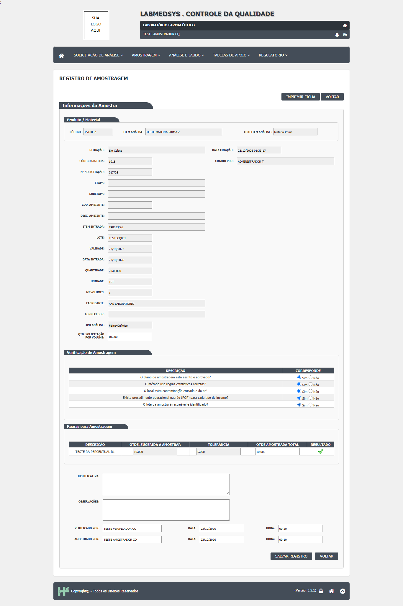
Figura 2: Regra percentual 10 % de um lote de 20 mostrada como 10,000.
Sugestão de correção
- Aplicar a tolerância na mesma unidade da regra (absoluta ou percentual) e calcular a quantidade quando a regra é percentual.
Como confirmar a correção
Repetir o(s) caso(s) CT-CQ-023 nos passos acima e conferir o esperado.
DV-CQ-012
A Regra de Amostragem grava texto inválido como zero e aceita valores negativos
| Gravidade | Situação | Tela | Caso de teste | Encontrado em | Norma afetada |
|---|---|---|---|---|---|
| Média | Aberto | Controle da Qualidade › Regra Amostragem (inclusão) | CT-CQ-022 e casos novos CT-CQ-N-02 e N-03 | 23/10/2026 (rodada 1 do CQ) | RDC 658/2022 (plano de amostragem com limites válidos) |
| Tipo: funcional · Já estava no portal: não |
O que acontece
Tolerância "abc": "Inclusão efetuada com sucesso." e a regra ficou com 0,00. Quantidade "xyz": gravou 0,00. Quantidade -5 e tolerância -1 foram aceitas. Quantidade 0 com tolerância vazia, e a tela em branco, só dão "Ocorreu um erro inesperado." (sem dizer o campo).
Como reproduzir
- Em Regra Amostragem, incluir regra para um item, tipo de cálculo "Por percentual", quantidade 10 e tolerância
abc. - Salvar e abrir a regra para conferir o valor gravado.
Dados de teste usados: Regras "TESTE RA TOL ABC R1" (item 1000), "TESTE RA QTD ABC R1" (item 10001) e "TESTE RA NEGATIVA R1" (item TESTER901).
Esperado e obtido
| Esperado | Obtido |
|---|---|
| Recusar texto e valores negativos, com mensagem por campo. | Zero gravado em silêncio; negativos aceitos. |
Evidências
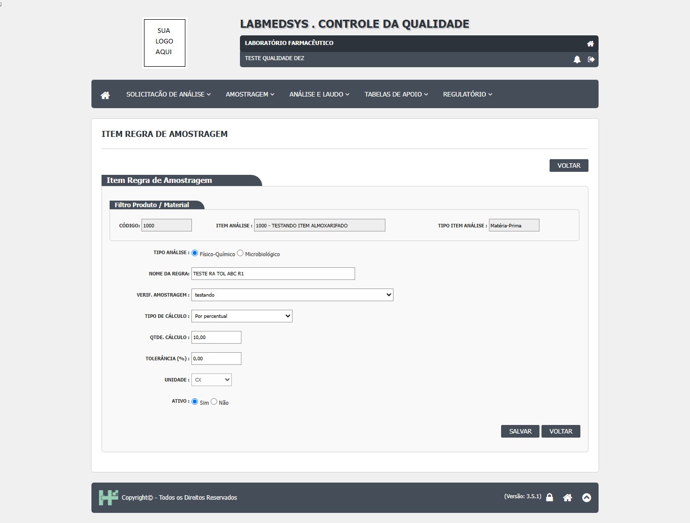
Figura 1: Regra com tolerância "abc" gravada como 0,00.
Figura 2: Regra com -5 e -1 gravada.
Sugestão de correção
- Validar número e sinal na gravação e mostrar a mensagem do campo.
Como confirmar a correção
Repetir o(s) caso(s) CT-CQ-022 e casos novos CT-CQ-N-02 e N-03 nos passos acima e conferir o esperado.
DV-CQ-013
Regra de amostragem em uso e unidade de medida usada numa regra podem ser excluídas
| Gravidade | Situação | Tela | Caso de teste | Encontrado em | Norma afetada |
|---|---|---|---|---|---|
| Média | Aberto | Controle da Qualidade › Regra Amostragem e Unidade de Medida (exclusão) | CT-CQ-025 e CT-CQ-034 | 23/10/2026 (rodada 1 do CQ) | RDC 658/2022 (manter a rastreabilidade do que foi usado nas análises) |
| Tipo: norma · Já estava no portal: não |
O que acontece
A regra de amostragem do item 20011, já usada na amostragem da 016/26, foi excluída ("Exclusão efetuada com sucesso.") e saiu da lista. A unidade TSTU2, escolhida numa regra de análise, também foi excluída com sucesso. (Para a regra de análise em uso a tela recusou: "Já existe registro de análise para essa regra.", CT-CQ-032 passou.)
Como reproduzir
- Excluir, na lista de Regra Amostragem, uma regra que já foi usada em uma amostragem.
- Criar uma unidade, usá-la numa regra de análise e excluí-la em Unidade de Medida.
Dados de teste usados: Regra "TESTE REGRA AMOSTRAGEM R11" (item 20011) e unidade TSTU2.
Esperado e obtido
| Esperado | Obtido |
|---|---|
| Recusar a exclusão (ou só inativar) quando o cadastro está em uso. | Excluídas sem aviso. |
Evidências
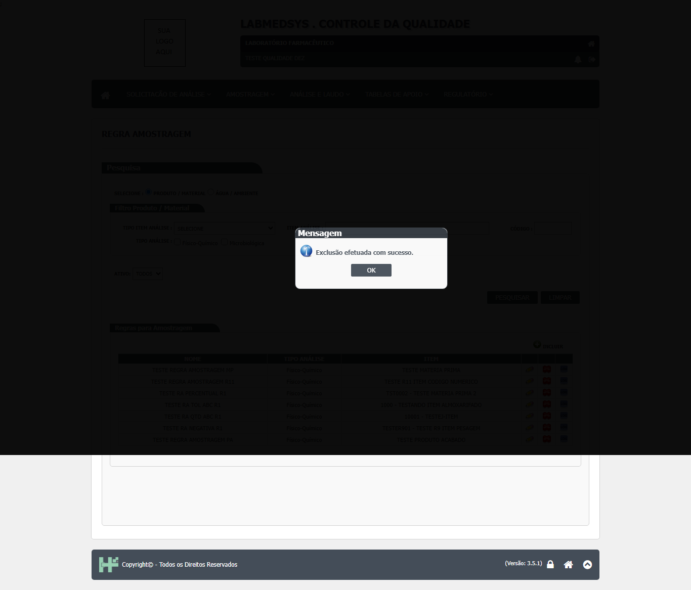
Figura 1: Exclusão da regra em uso.
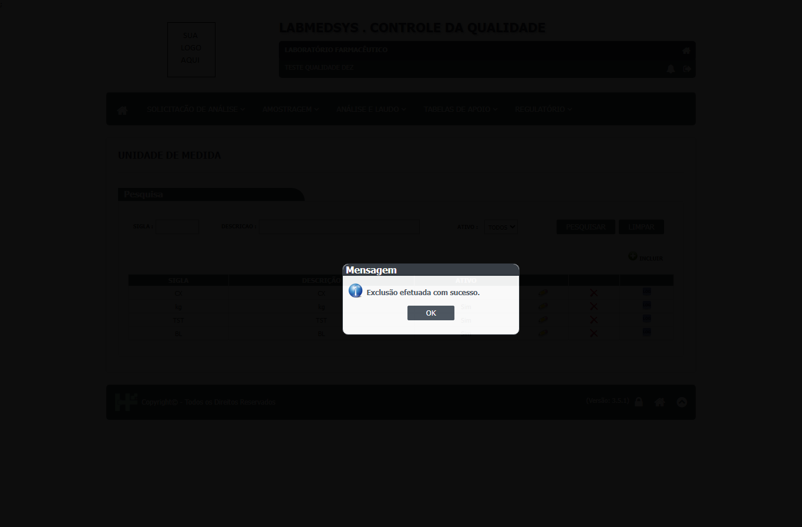
Figura 2: Exclusão da unidade usada numa regra.
Sugestão de correção
- Conferir o uso do cadastro antes de excluir (como já é feito na regra de análise).
Como confirmar a correção
Repetir o(s) caso(s) CT-CQ-025 e CT-CQ-034 nos passos acima e conferir o esperado.
DV-CQ-014
Duas Regras de Análise com o mesmo nome no mesmo item são aceitas
| Gravidade | Situação | Tela | Caso de teste | Encontrado em | Norma afetada |
|---|---|---|---|---|---|
| Média | Aberto | Controle da Qualidade › Regra de Análise (inclusão) | CT-CQ-028 (e reconfirmação do CT-CQ-027, DV-CQ-002) | 23/10/2026 (rodada 1 do CQ) | RDC 658/2022, arts. 253 e 255 (ensaios identificados de forma inequívoca) |
| Tipo: funcional · Já estava no portal: não |
O que acontece
Foram gravadas duas regras com o nome "TESTE NOME REPETIDO CQ1" no item 10001, com limites diferentes: "Inclusão efetuada com sucesso." nas duas vezes. Na análise, os dois ensaios teriam o mesmo nome. Na mesma rodada, o DV-CQ-002 foi reconfirmado (mínimo 0 e máximo -1 aceitos) e ampliado: mínimo -5 e máximo -20 também foi aceito.
Como reproduzir
- Em Regra de Análise, incluir a regra "TESTE NOME REPETIDO CQ1" (intervalo 1 a 2) para o item 10001.
- Incluir outra com o mesmo nome (intervalo 3 a 4).
Dados de teste usados: Item 10001; regras "TESTE NOME REPETIDO CQ1" (duas), "TESTE CT027A CQ1" (0 a -1) e "TESTE CT027C CQ1" (-5 a -20).
Esperado e obtido
| Esperado | Obtido |
|---|---|
| Recusar o nome repetido no mesmo item e tipo de análise. | Aceitou. |
Evidências
Figura 1: Segunda regra com o mesmo nome aceita.
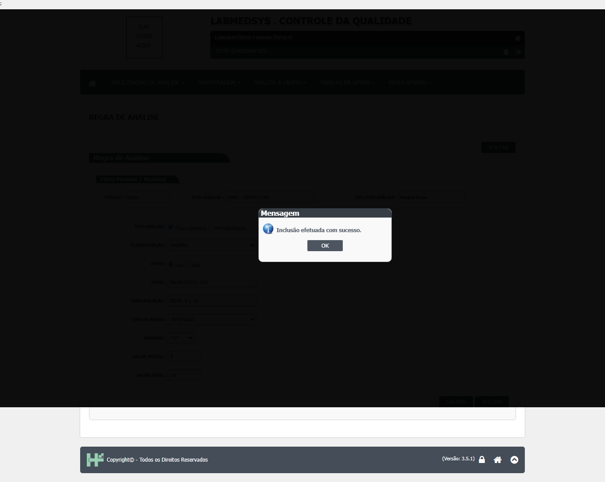
Figura 2: Faixa -5 a -20 aceita.
Sugestão de correção
- Validar o nome único por item e tipo de análise.
Como confirmar a correção
Repetir o(s) caso(s) CT-CQ-028 nos passos acima e conferir o esperado.
DV-CQ-015
As permissões do perfil (incluir, excluir) e a função do usuário não são conferidas nas telas de cadastro
| Gravidade | Situação | Tela | Caso de teste | Encontrado em | Norma afetada |
|---|---|---|---|---|---|
| Média | Aberto | Controle da Qualidade › Unidade de Medida, Regra Estabilidade | CT-CQ-072, CT-CQ-074 e caso novo CT-CQ-N-07 | 23/10/2026 (rodada 1 do CQ) | RDC 658/2022, art. 8º, XV (acesso por papel); Guia 33/2020 (controle de acesso) |
| Tipo: acesso/segurança · Já estava no portal: não |
O que acontece
Um usuário de perfil só de consulta (sem Incluir, Alterar nem Excluir marcados) abriu Unidade de Medida, viu os botões Incluir e Excluir, incluiu a unidade TSTU1 ("Inclusão efetuada com sucesso.") e a excluiu ("Exclusão efetuada com sucesso."). Um usuário sem nenhuma função profissional do CQ abriu a Regra Estabilidade pelo menu (a tela não tem filtro de acesso). Só as exclusões de regra de análise, regra de amostragem e verificação de amostragem pedem a permissão de excluir.
Como reproduzir
- Entrar com o usuário de perfil só de consulta, abrir Unidade de Medida, Incluir uma unidade e Salvar; depois excluir a mesma.
- Entrar com o usuário sem função profissional e abrir Regra Estabilidade pelo menu.
Dados de teste usados: Unidade TSTU1 (criada e excluída); usuários de teste de perfil de consulta e sem função.
Esperado e obtido
| Esperado | Obtido |
|---|---|
| Recusar incluir e excluir a quem só tem consulta; limitar a Regra Estabilidade a quem tem a função de estabilidade. | Tudo permitido. |
Evidências
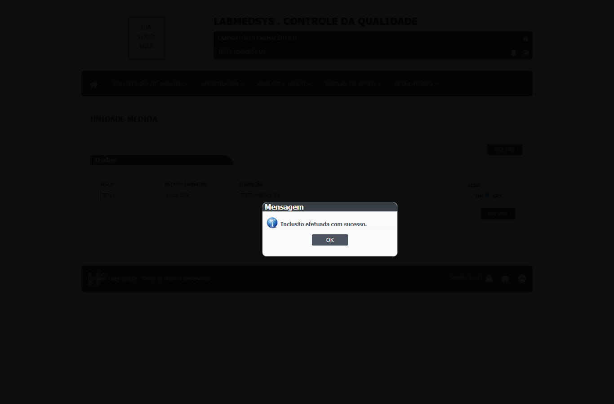
Figura 1: Unidade incluída por usuário só de consulta.
Figura 2: Unidade excluída pelo mesmo usuário.
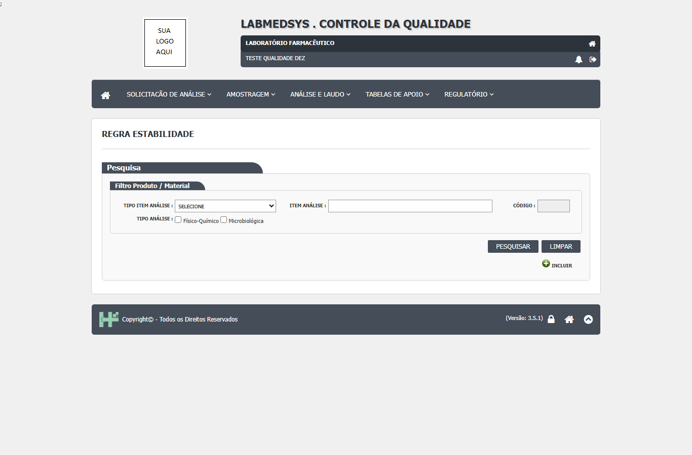
Figura 3: Regra Estabilidade aberta por usuário sem função.
Sugestão de correção
- Aplicar o filtro de permissão (consulta, incluir, alterar, excluir) em todas as telas e nas gravações.
Como confirmar a correção
Repetir o(s) caso(s) CT-CQ-072, CT-CQ-074 e caso novo CT-CQ-N-07 nos passos acima e conferir o esperado.
Observações
A abertura das telas pelo endereço, sem passar pelo menu, não foi testada (fora do escopo desta rodada).
DV-CQ-016
Regra de Estabilidade: a terceira regra (repetida) é aceita e uma regra pode ser salva sem nenhum prazo
| Gravidade | Situação | Tela | Caso de teste | Encontrado em | Norma afetada |
|---|---|---|---|---|---|
| Média | Aberto | Controle da Qualidade › Tabelas de Apoio › Regra Estabilidade | CT-CQ-041 e casos novos CT-CQ-N-34 e N-35 | 23/10/2026 (rodada 1 do CQ) | RDC 658/2022 (estudo de estabilidade com protocolo definido) |
| Tipo: funcional · Já estava no portal: não |
O que acontece
O item 20011 já tinha uma regra físico-química e ganhou uma microbiológica; uma terceira regra físico-química foi aceita (em vez de "Item já cadastrado"), então há duas regras iguais para o mesmo item e tipo. Além disso, a regra pode ser salva sem nenhum tempo: a lista mostra "Não" nos quatro tipos de estudo e a tela diz "Alteração efetuada com sucesso.". (Valores fora de ordem ou negativos foram recusados: "Acelerada T2 com valor inválido!", CT-CQ-040 passou; o campo Acompanhamento do T3 com -5 não foi apontado.)
Como reproduzir
- Em Regra Estabilidade, criar para o mesmo item uma regra físico-química e uma microbiológica.
- Criar uma terceira físico-química e salvar.
- Criar uma regra e salvar sem incluir nenhum tempo.
Dados de teste usados: Item 20011 (regras de código 1, 2 e 3); item 10001 (regra de código 4).
Esperado e obtido
| Esperado | Obtido |
|---|---|
| Recusar a regra repetida e a regra sem prazos. | As duas foram aceitas. |
Evidências
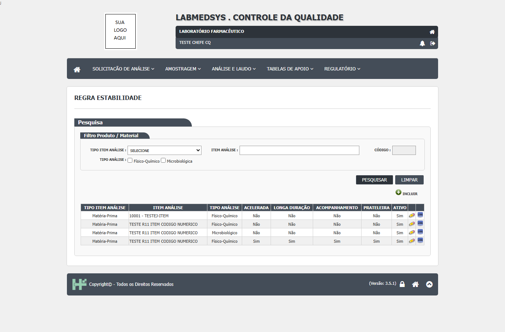
Figura 1: Três regras para o item 20011 (duas físico-químicas).
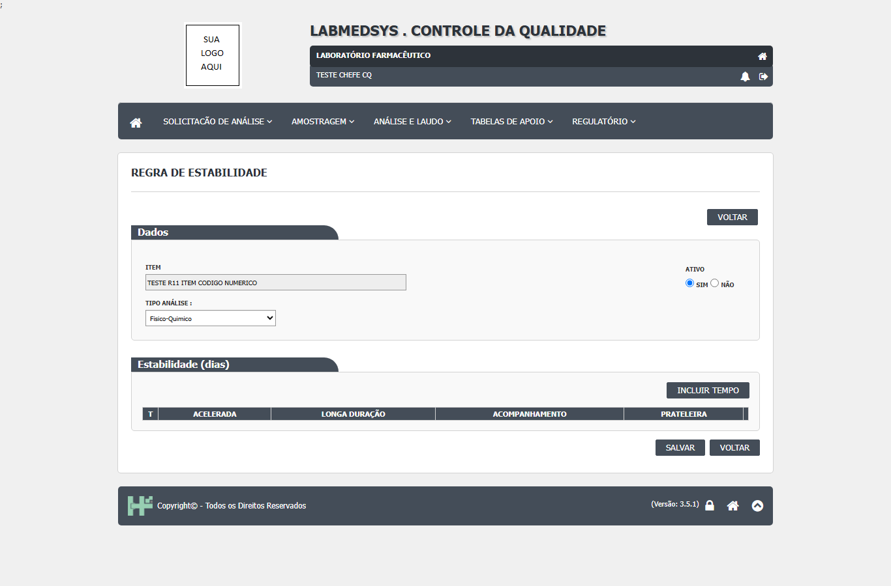
Figura 2: Regra salva sem nenhum tempo.
Sugestão de correção
- Validar a duplicidade por item e tipo de análise e exigir ao menos um tempo com prazo.
Como confirmar a correção
Repetir o(s) caso(s) CT-CQ-041 e casos novos CT-CQ-N-34 e N-35 nos passos acima e conferir o esperado.
Observações
Ao incluir tempos, só vale preencher depois de criar todas as linhas: preencher e depois clicar em Incluir tempo apaga os valores digitados.
DV-CQ-017
Alterar a Regra de Estabilidade não pede justificativa e não deixa histórico
| Gravidade | Situação | Tela | Caso de teste | Encontrado em | Norma afetada |
|---|---|---|---|---|---|
| Média | Aberto | Controle da Qualidade › Tabelas de Apoio › Regra Estabilidade | CT-CQ-042 (ponto 5 do fluxo) | 23/10/2026 (rodada 1 do CQ) | RDC 658/2022, arts. 125 e 258, VIII (alteração controlada de documentos e especificações) |
| Tipo: norma · Já estava no portal: não |
O que acontece
Foram incluídos os tempos T0 e T1 numa regra existente: "Alteração efetuada com sucesso." sem pedir justificativa, e o ícone Log da regra responde "NÃO EXISTE LOG DE ALTERAÇÃO PARA ESTE REGISTRO."
Como reproduzir
- Em Regra Estabilidade, abrir uma regra, incluir dois tempos e Salvar.
- Clicar no ícone Log da regra na lista.
Dados de teste usados: Regra do item 10001 (código 4).
Esperado e obtido
| Esperado | Obtido |
|---|---|
| Pedir justificativa e gravar o valor antigo e o novo. | Sem justificativa e sem histórico. |
Evidências
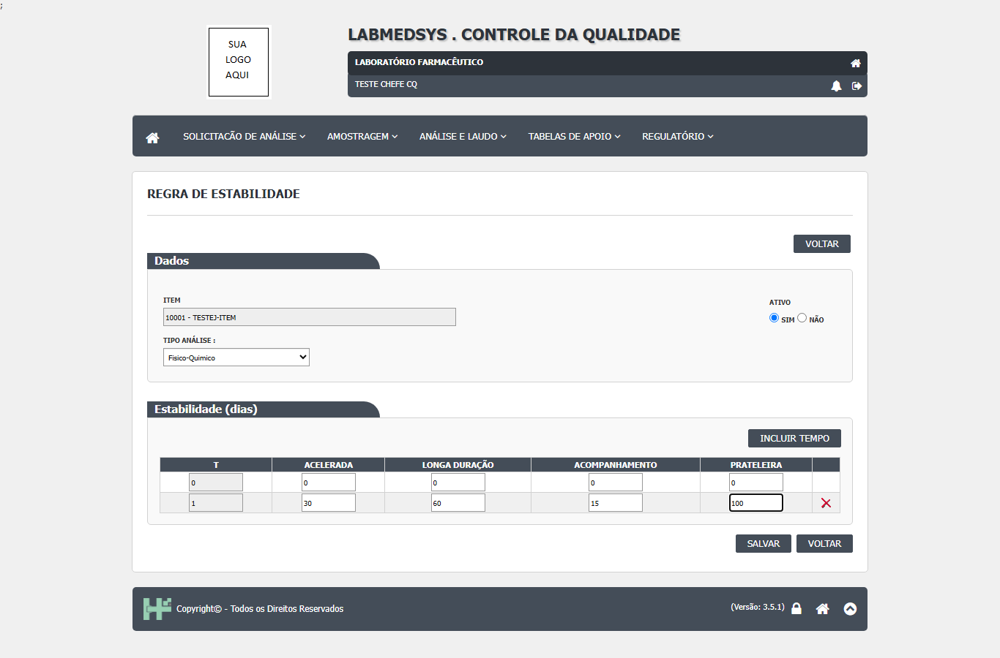
Figura 1: Tempos preenchidos antes de salvar.
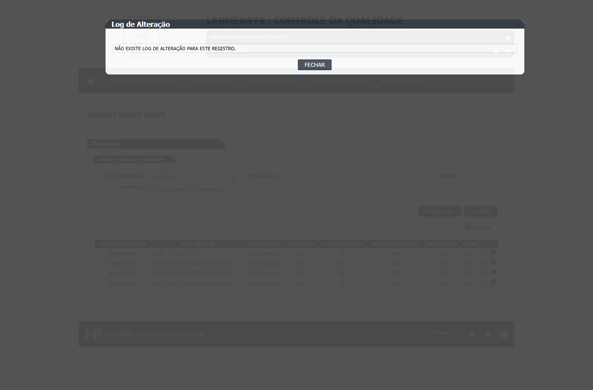
Figura 2: Log vazio.
Sugestão de correção
- Exigir justificativa e gravar o histórico campo a campo.
Como confirmar a correção
Repetir o(s) caso(s) CT-CQ-042 nos passos acima e conferir o esperado.
DV-CQ-018
Excluir coleta agendada e excluir checklist de verificação não pedem justificativa nem deixam histórico
| Gravidade | Situação | Tela | Caso de teste | Encontrado em | Norma afetada |
|---|---|---|---|---|---|
| Média | Aberto | Controle da Qualidade › Programação de Solicitação de Análise (agenda) e Verificação de Amostragens | CT-CQ-067 e caso novo CT-CQ-N-21 | 23/10/2026 (rodada 1 do CQ) | RDC 658/2022, arts. 125 e 258, VIII |
| Tipo: norma · Já estava no portal: não |
O que acontece
Na agenda de ambiente, a coleta de 27/10 foi excluída pelo ícone da lixeira: só "Deseja excluir a Solicitação?" e pronto; a solicitação sai da lista e o log dela diz "NÃO EXISTE LOG DE ALTERAÇÃO PARA ESTE REGISTRO." Na Verificação de Amostragens, a exclusão de um checklist também não pediu justificativa e o log do cadastro mostra só a inclusão.
Como reproduzir
- Na agenda, arrastar uma sala para um dia futuro e depois clicar na lixeira do evento.
- Em Verificação de Amostragens, excluir um checklist e abrir o ícone Log.
Dados de teste usados: Solicitação 1026 (agenda, ambiente INS-THG-08) e checklist "TESTE VERIFICAÇÃO R1".
Esperado e obtido
| Esperado | Obtido |
|---|---|
| Justificativa obrigatória e histórico da exclusão. | Sem justificativa e sem histórico. |
Evidências
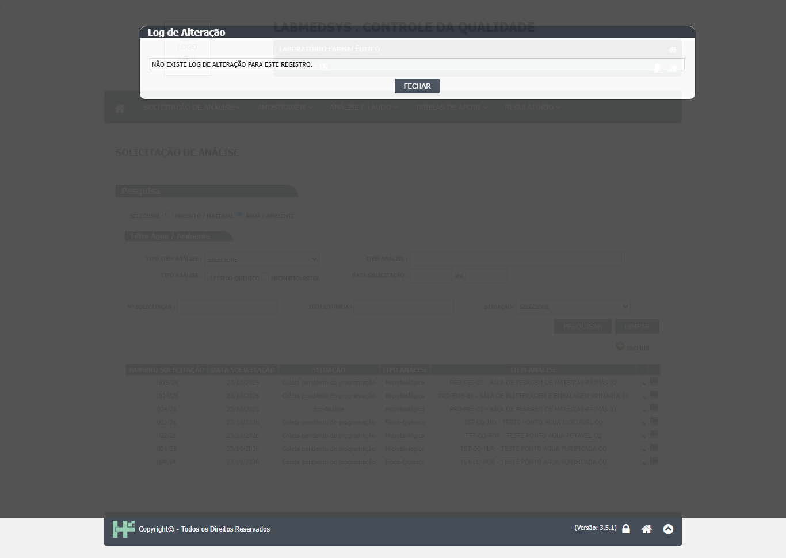
Figura 1: Log da coleta excluída: vazio.
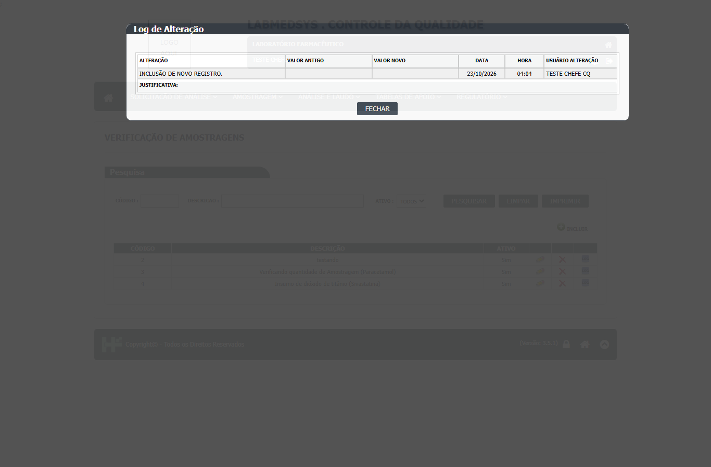
Figura 2: Log do checklist: só a inclusão.
Sugestão de correção
- Pedir justificativa e gravar a exclusão no histórico.
Como confirmar a correção
Repetir o(s) caso(s) CT-CQ-067 e caso novo CT-CQ-N-21 nos passos acima e conferir o esperado.
DV-CQ-019
Ambiente: registrar a amostragem mostra "Ocorreu um erro interno não esperado." mas a amostragem fica gravada
| Gravidade | Situação | Tela | Caso de teste | Encontrado em | Norma afetada |
|---|---|---|---|---|---|
| Média | Aberto | Controle da Qualidade › Registro de Amostragem (ambiente) | Caso novo CT-CQ-N-36 | 23/10/2026 (rodada 1 do CQ) | RDC 658/2022 (registro confiável) |
| Tipo: funcional · Já estava no portal: não |
O que acontece
Ao salvar o registro da amostragem da sala PRD-PES-01 (024/26), com ponto de amostragem, verificador e amostrador, a tela respondeu "Ocorreu um erro interno não esperado."; mesmo assim a amostragem passou para Executada e a solicitação para Análise pendente. Quem registrou não sabe se gravou.
Como reproduzir
- Em Amostragens Pendentes, abrir a amostragem de uma solicitação de ambiente.
- Informar ponto de amostragem, verificador, amostrador, data, hora, quantidade e Salvar Registro.
Dados de teste usados: Solicitação 024/26.
Esperado e obtido
| Esperado | Obtido |
|---|---|
| Gravar e confirmar, ou recusar com a causa. | Erro na tela e registro gravado. |
Evidências
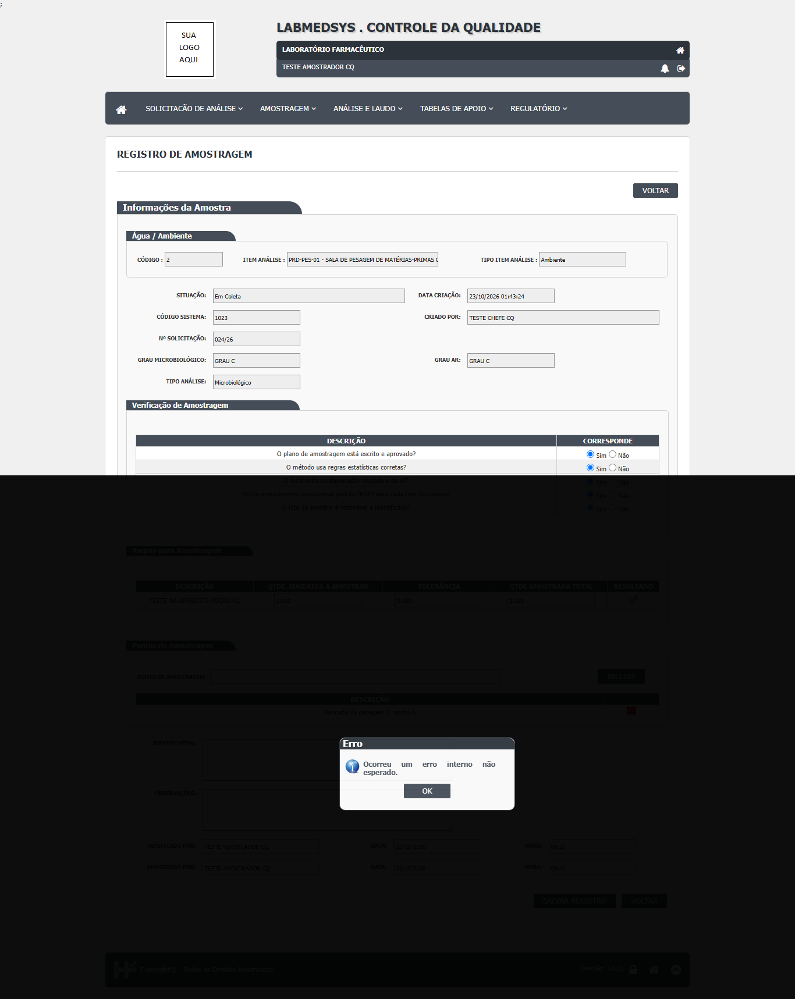
Figura 1: Mensagem de erro ao salvar o registro.
Sugestão de correção
- Tratar a falha (provavelmente a chamada ao Estoque, que não existe para ambiente) sem derrubar a resposta.
Como confirmar a correção
Repetir o(s) caso(s) Caso novo CT-CQ-N-36 nos passos acima e conferir o esperado.
Observações
Hipótese, não confirmada: a falha vem da etapa que pede a separação ao Estoque, que não se aplica a ambiente.
DV-CQ-020
A agenda aceita ambiente com análise físico-química e horários fora de 8h às 18h
| Gravidade | Situação | Tela | Caso de teste | Encontrado em | Norma afetada |
|---|---|---|---|---|---|
| Média | Aberto | Controle da Qualidade › Programação de Solicitação de Análise (agenda) | CT-CQ-062 e caso novo CT-CQ-N-23 | 23/10/2026 (rodada 1 do CQ) | RDC 658/2022 (ambiente controlado: análise microbiológica) |
| Tipo: funcional · Já estava no portal: não |
O que acontece
Na Regra Amostragem a caixa "Físico-Químico" fica desabilitada para ambiente (CT-CQ-020 passou), mas na agenda o tipo AMBIENTE com Físico-Químico carrega as salas e o agendamento da sala PRD-PES-01 em 26/10 foi aceito, gerando solicitação físico-química de ambiente (1027/26). Horários 23:30 e 00:01 também foram aceitos (a tela só recusa horário inválido, como 25:99, e horário já ocupado).
Como reproduzir
- Em Programação de Solicitação de Análise, escolher AMBIENTE, marcar Físico-Químico e Carregar.
- Arrastar uma sala para um dia futuro, informar 10:00 e OK.
Dados de teste usados: Salas PRD-PES-01, PRD-PES-02, PRD-EMB-01 e INS-THG-08; solicitações 1024/26, 1025/26 e 1027/26.
Esperado e obtido
| Esperado | Obtido |
|---|---|
| Só microbiológico para ambiente; horário dentro do expediente definido. | Aceitou físico-químico e horários de madrugada. |
Evidências
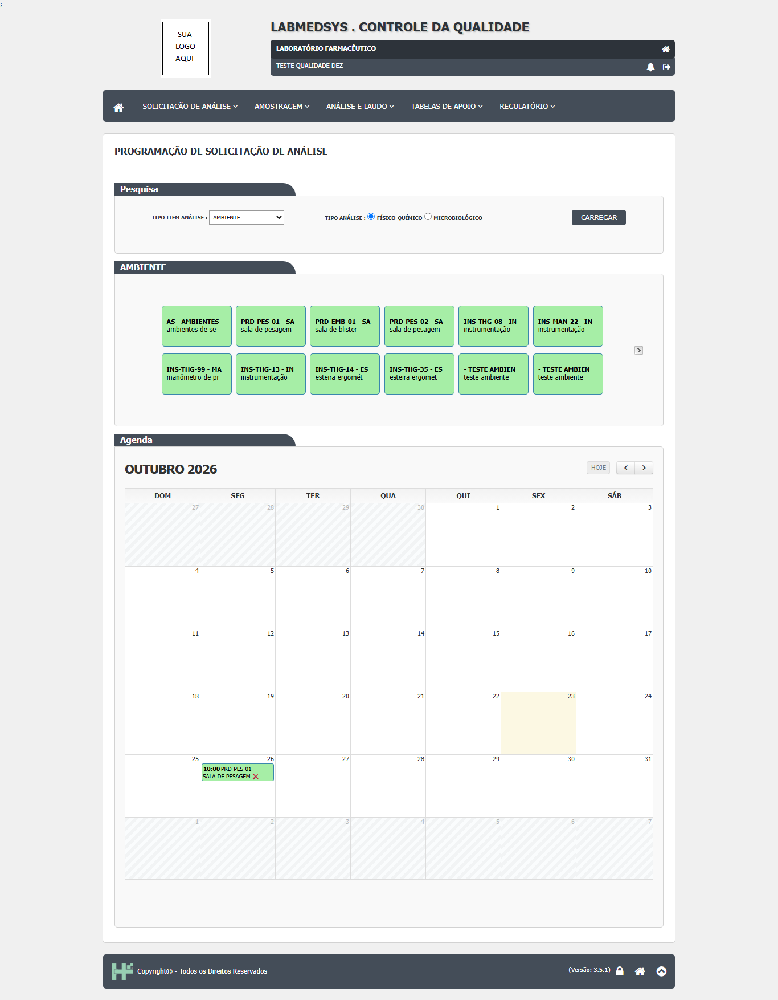
Figura 1: Agendamento físico-químico de ambiente aceito.
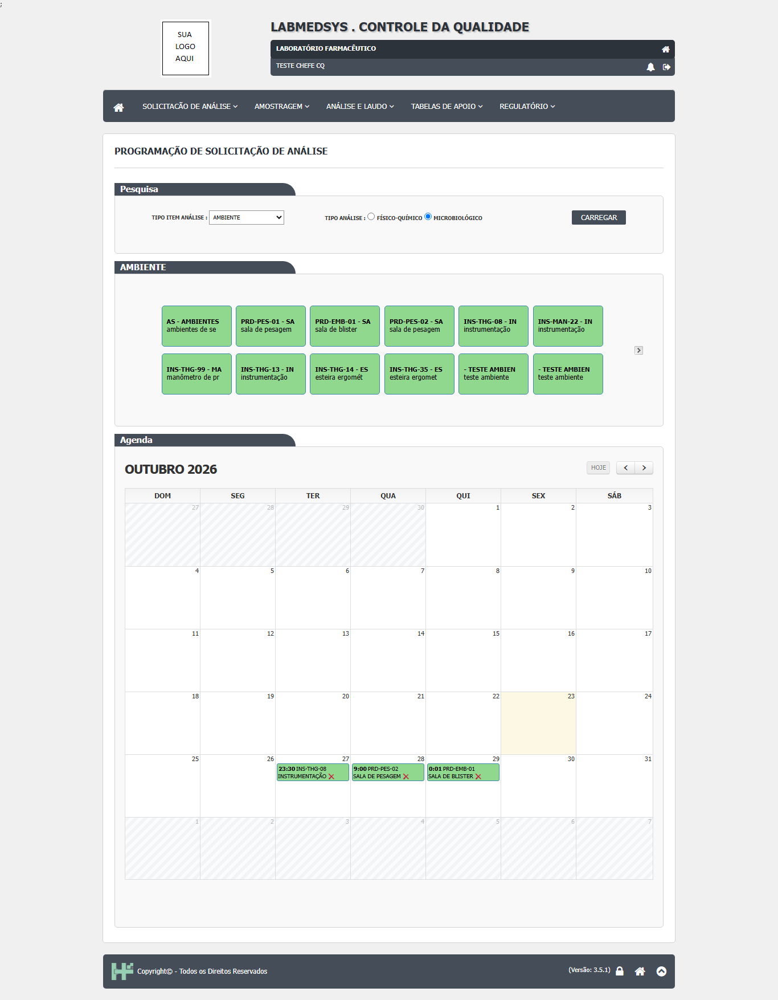
Figura 2: Horário 23:30 aceito.
Sugestão de correção
- Aplicar na agenda a mesma regra da Regra Amostragem e definir o horário permitido.
Como confirmar a correção
Repetir o(s) caso(s) CT-CQ-062 e caso novo CT-CQ-N-23 nos passos acima e conferir o esperado.
DV-CQ-021
A lista de Solicitação de Análise mostra "Laudo Liberado" em solicitação que está Cancelada
| Gravidade | Situação | Tela | Caso de teste | Encontrado em | Norma afetada |
|---|---|---|---|---|---|
| Média | Aberto | Controle da Qualidade › Solicitação de Análise (lista e filtro de situação) | Caso novo CT-CQ-F-01 (fase D) | 23/10/2026 (rodada 1 do CQ) | RDC 658/2022 (informação de situação confiável) |
| Tipo: funcional · Já estava no portal: não |
O que acontece
A solicitação 016/26 está Cancelada (a tela Detalhar mostra "Cancelada" e o filtro situação = CANCELADA a encontra), mas a coluna Situação da lista continua "Laudo Liberado", inclusive no resultado do filtro Cancelada. O filtro "Laudo liberado" já não a traz, ou seja, lista e filtro discordam.
Como reproduzir
- Cancelar uma solicitação com laudo liberado (ver DV-CQ-007).
- Na lista de Solicitação de Análise, filtrar por situação CANCELADA e ler a coluna Situação.
Dados de teste usados: Solicitação 016/26.
Esperado e obtido
| Esperado | Obtido |
|---|---|
| Coluna Situação = Cancelada. | Coluna Situação = Laudo Liberado. |
Evidências
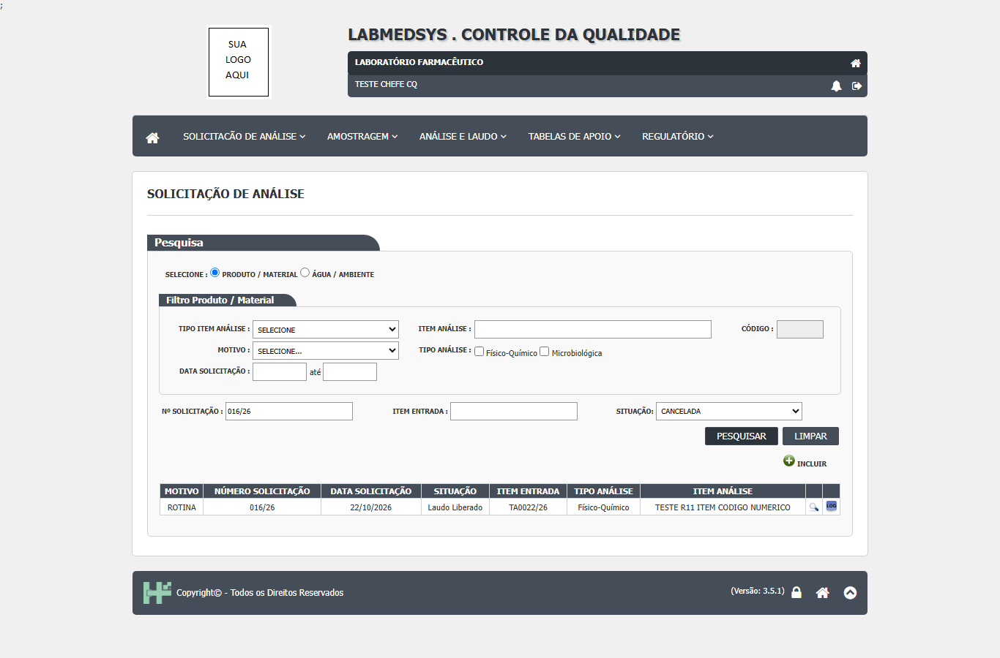
Figura 1: Filtro CANCELADA traz a 016/26 com "Laudo Liberado".
Sugestão de correção
- Mostrar a situação da solicitação e não a da análise.
Como confirmar a correção
Repetir o(s) caso(s) Caso novo CT-CQ-F-01 nos passos acima e conferir o esperado.
DV-CQ-022
O CQ procura as funções profissionais por número fixo (34, 39, 41, 48 e 71) e os nomes cadastrados no Principal não combinam; a função 71 não existe
| Gravidade | Situação | Tela | Caso de teste | Encontrado em | Norma afetada |
|---|---|---|---|---|---|
| Média | Aberto | Controle da Qualidade › Programação de Amostragem, Registro de Amostragem, Programação de Análise, Emissão Laudo Final, Estabilidade | Preparação (seção 3.2 do plano) e CT-CQ-007 e CT-CQ-049 | 23/10/2026 (rodada 1 do CQ) | RDC 658/2022, art. 8º, XV (papéis conhecidos e conferidos) |
| Tipo: ambiente/dados · Já estava no portal: não |
O que acontece
O código do CQ busca o amostrador pela função 34, o analista físico-químico pela 39, o analista microbiológico pela 41, o chefe pela 48 e a estabilidade pela 71. No cadastro do Principal, a 34 chama-se "AMOSTRADOR TESTANDO SISTEMA" (a função "AMOSTRADOR", de número 40, não vale: o usuário só apareceu na lista depois de receber a 34), a 39 chama-se "AUDITOR", a 41 "TESTE CQ - CHEFE DE SUBDIVISAO" e a 71 não existe (o cadastro termina na 48), então a conferência da função de estabilidade nunca encontra ninguém. Os nomes de função não ajudam quem cadastra o usuário.
Como reproduzir
- Dar a função 40 ("AMOSTRADOR") a um usuário e procurá-lo no campo Responsável da Programação de Amostragem: não aparece.
- Dar a 34 e procurar de novo: aparece.
Dados de teste usados: Usuários de teste do CQ criados nesta rodada.
Esperado e obtido
| Esperado | Obtido |
|---|---|
| Funções identificadas por nome/código de configuração, não por número fixo; função de estabilidade existente. | Número fixo, nomes trocados e uma função inexistente. |
Evidências
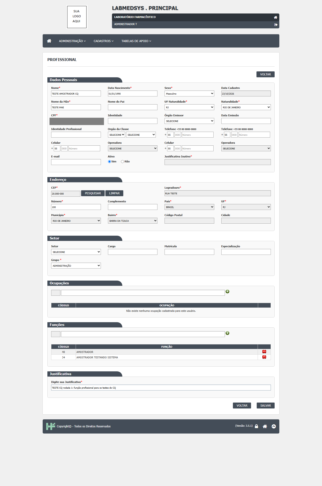
Figura 1: Função 34 dada ao usuário amostrador de teste.
Sugestão de correção
- Criar a configuração "função → papel do CQ" e conferir na gravação.
Como confirmar a correção
Repetir o(s) caso(s) Preparação nos passos acima e conferir o esperado.
Observações
Pelo código (UsuarioService, AnaliseProgramacaoController, EmissaoLaudoFinalController, AcompanhamentoController); o nome das funções vem do cadastro do ambiente de teste.
DV-CQ-023
A agenda de ambiente não tem frequência nem recorrência: cada coleta é marcada uma a uma
| Gravidade | Situação | Tela | Caso de teste | Encontrado em | Norma afetada |
|---|---|---|---|---|---|
| Média | Aberto | Controle da Qualidade › Programação de Solicitação de Análise | CT-CQ-063 (ponto 1 do fluxo de água e ambiente) | 23/10/2026 (rodada 1 do CQ) | RDC 658/2022 (programa de monitoramento ambiental com frequência definida) |
| Tipo: norma · Já estava no portal: não |
O que acontece
A tela tem só o tipo de item, o tipo de análise, as salas e o calendário: nenhuma opção de frequência, periodicidade ou recorrência por sala. A tela de água não carrega (DV-CQ-008), então a conferência valeu para ambiente.
Como reproduzir
- Abrir a Programação de Solicitação de Análise, escolher AMBIENTE e Carregar; procurar opção de frequência.
Esperado e obtido
| Esperado | Obtido |
|---|---|
| Programar a frequência de monitoramento por ponto ou sala. | Só agendamento avulso, arrastando a sala para um dia. |
Evidências
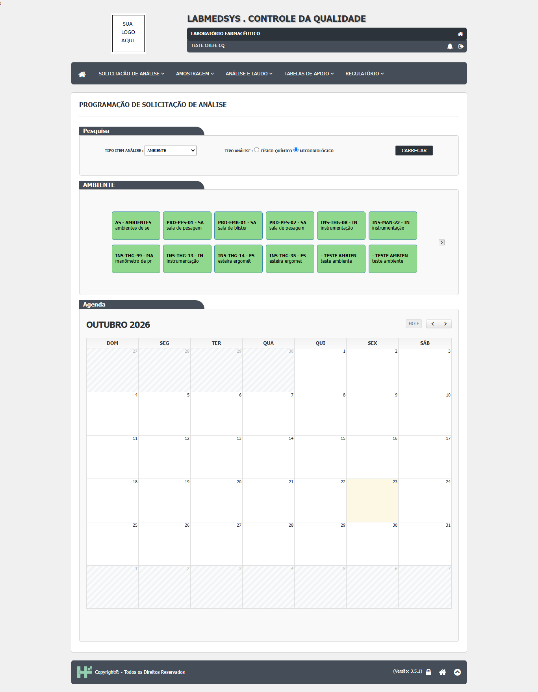
Figura 1: Agenda de ambiente, sem frequência.
Sugestão de correção
- Criar o programa de monitoramento (frequência, tolerância de dias e lembrete).
Como confirmar a correção
Repetir o(s) caso(s) CT-CQ-063 nos passos acima e conferir o esperado.
DV-CQ-024
As solicitações geradas pela agenda e a de item com teor recebem número fora da sequência (1024/26, 1025/26, 1027/26 e 103/26)
| Gravidade | Situação | Tela | Caso de teste | Encontrado em | Norma afetada |
|---|---|---|---|---|---|
| Baixa | Aberto | Controle da Qualidade › Solicitação de Análise (lista) | Observação em CT-CQ-067 e CT-CQ-002 | 23/10/2026 (rodada 1 do CQ) | RDC 658/2022 (identificação sequencial dos registros) |
| Tipo: funcional · Já estava no portal: não |
O que acontece
Depois da solicitação 019/26, as coletas agendadas na agenda de ambiente receberam os números 1024/26, 1025/26 e 1027/26 (o código interno) e a primeira solicitação de material depois delas veio como 103/26, em vez de 025/26 e seguintes. A numeração sequencial por ano deixa de ser confiável.
Como reproduzir
- Agendar uma coleta de ambiente na agenda e olhar o número na lista de Solicitação de Análise (Água / Ambiente).
Dados de teste usados: Solicitações 1024/26, 1025/26, 1027/26 e 103/26.
Esperado e obtido
| Esperado | Obtido |
|---|---|
| Número sequencial do ano (025/26, 026/26...). | Número igual ao código interno. |
Evidências
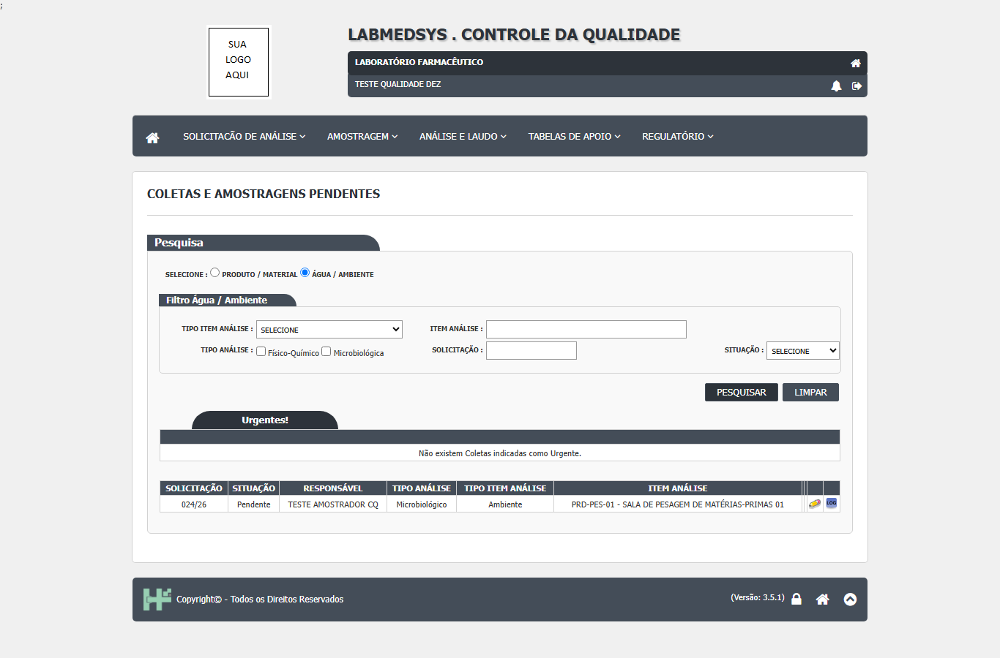
Figura 1: Amostragens pendentes de água e ambiente.
Sugestão de correção
- Gerar o número pela mesma rotina em todas as origens.
Como confirmar a correção
Repetir o(s) caso(s) Observação em CT-CQ-067 e CT-CQ-002 nos passos acima e conferir o esperado.
Observações
A origem da numeração (1024 e 103) é inferência; só se viu o efeito.
DV-CQ-025
Relatórios: a etiqueta traz o nome de outra instituição, as datas saem em dois formatos e o boletim de ambiente sai em branco
| Gravidade | Situação | Tela | Caso de teste | Encontrado em | Norma afetada |
|---|---|---|---|---|---|
| Baixa | Aberto | Controle da Qualidade › Gerar Etiqueta, Emissão Laudo Final (laudo) e Consultar Análise Programada (boletim de ambiente) | CT-CQ-065, CT-CQ-F-20 e CT-CQ-F-21 e caso novo CT-CQ-N-40 | 23/10/2026 (rodada 1 do CQ) | RDC 658/2022 (identificação correta nos documentos da qualidade) |
| Tipo: funcional · Já estava no portal: não |
O que acontece
A etiqueta (017/26) tem no alto "LABORATÓRIO QUÍMICO FARMACÊUTICO DA AERONÁUTICA", e o laudo e o boletim dizem "Laboratório Farmacêutico". O laudo traz "Validade Laudo: 23/10/2027" e, na mesma folha, "Validade: 10/23/2027" (data americana); o boletim também imprime a data de hoje como "10/23/2026 3:24:50 AM". O boletim de ambiente sai com "Data da exposição", "Ambiente avaliado", método, tempo, meios de cultura e as quatro condições (sala vazia, fluxo ligado, ar ligado, sala em atividade) em branco, para preencher a mão; a coluna Resultado também sai vazia (DV-CQ-009). A etiqueta com "Teor: 0.000" mostra o teor mesmo quando não é obrigatório.
Como reproduzir
- Em Gerar Etiqueta, clicar no ícone de uma análise com laudo, informar a quantidade 2 e Imprimir.
- Em Emissão Laudo Final, clicar em Imprimir; em Consultar Análise Programada, imprimir uma análise de ambiente.
Dados de teste usados: Análises 9 (017/26) e 12 (024/26).
Esperado e obtido
| Esperado | Obtido |
|---|---|
| Nome da instituição correto e igual nos documentos; data no mesmo formato; boletim com os dados da coleta. | Nome de outra instituição, dois formatos de data e boletim sem dados. |
Evidências
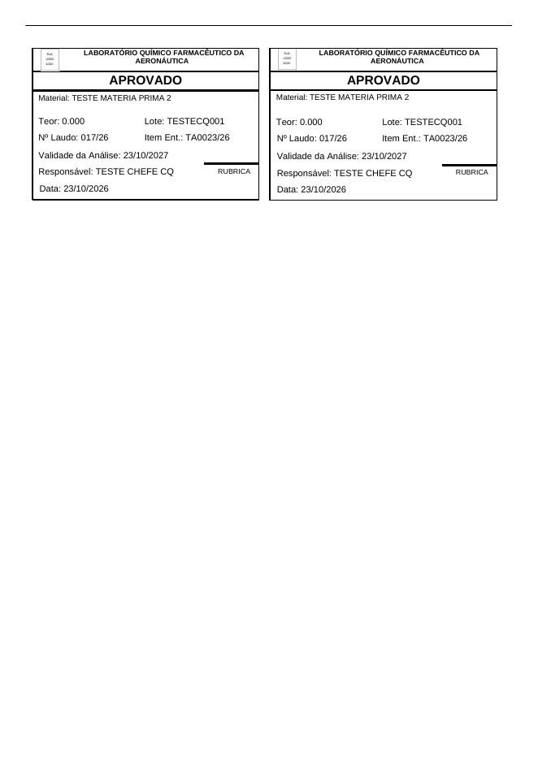
Figura 1: Etiqueta da 017/26. (primeira página do PDF)
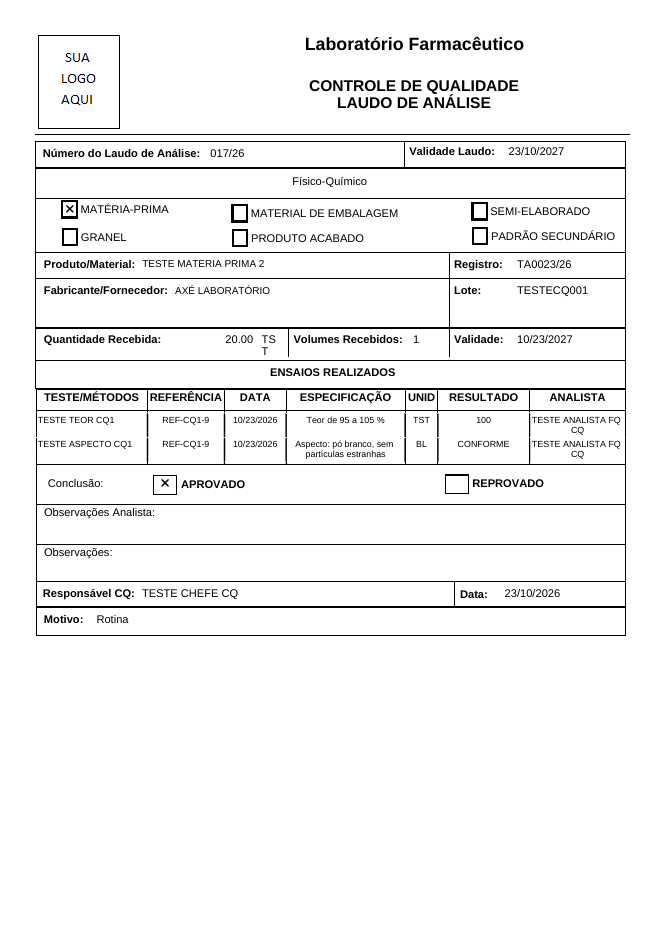
Figura 2: Laudo da 017/26. (primeira página do PDF)
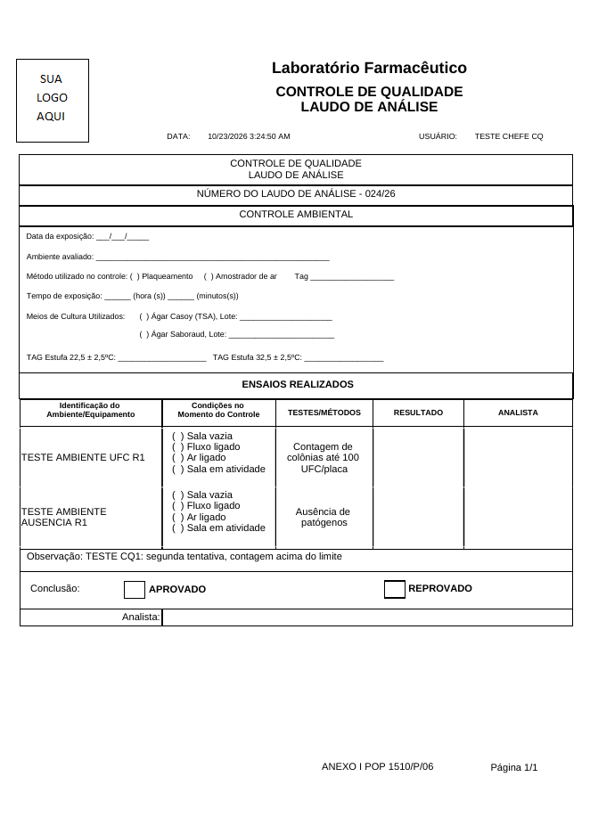
Figura 3: Boletim de ambiente da 024/26. (primeira página do PDF)
Sugestão de correção
- Ler o nome da instituição da configuração do sistema; usar um só formato de data; preencher no boletim o que o sistema já sabe.
Como confirmar a correção
Repetir o(s) caso(s) CT-CQ-065, CT-CQ-F-20 e CT-CQ-F-21 e caso novo CT-CQ-N-40 nos passos acima e conferir o esperado.
DV-CQ-026
Pequenos desvios de tela: teor sem faixa nem decimal, priorização de solicitação já liberada, mensagem repetida, menu duplicado e tela fora do menu em branco
| Gravidade | Situação | Tela | Caso de teste | Encontrado em | Norma afetada |
|---|---|---|---|---|---|
| Baixa | Aberto | Emissão Laudo Final, Priorização de Solicitação Análise, Programação de Análise, menu do CQ, Consultar Coletas Pendentes de Programação | Casos novos CT-CQ-N-09, N-16, N-26, N-27, N-29 e N-30 | 23/10/2026 (rodada 1 do CQ) | Qualidade da informação (sem norma direta) |
| Tipo: funcional · Já estava no portal: não |
O que acontece
(1) Teor do laudo: digitar "99,5" virou 995 e foi aprovado (sem limite de 100 % nem casas decimais). (2) Priorização: a solicitação 005/26, com laudo liberado, foi marcada como urgente ("Alteração efetuada com sucesso."). (3) Programação de Análise sem responsável: "Responsável não informado Responsável não informado" (mensagem repetida). (4) O menu mostra "Verificação de Amostragens" duas vezes (mesma tela, grupo Amostragem). (5) A tela Consultar Coletas Pendentes de Programação (fora do menu) abre em branco, sem título nem campos. (6) Cadastros com Ativo sem marcar: a unidade foi gravada como inativa e listada como "Nao" (sem acento).
Como reproduzir
- Ver cada item na tela citada.
Dados de teste usados: Solicitações 103/26 (teor), 005/26 (priorização) e 017/26 (programação de análise).
Esperado e obtido
| Esperado | Obtido |
|---|---|
| Teor entre 0 e 100 com decimais; só priorizar o que não está liberado; mensagem única; menu sem repetição. | Os comportamentos acima. |
Evidências
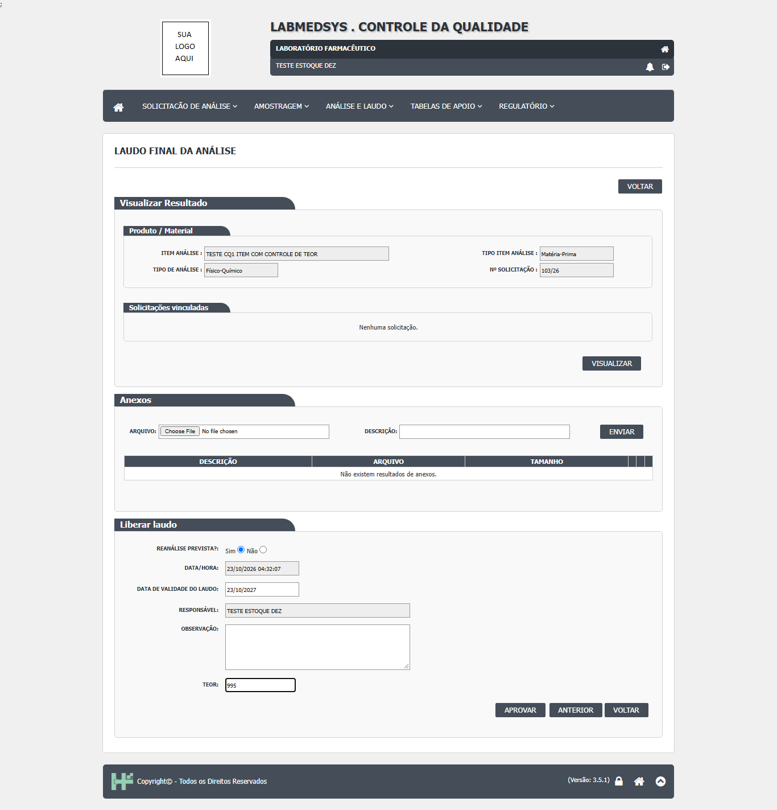
Figura 1: Teor digitado como 995.
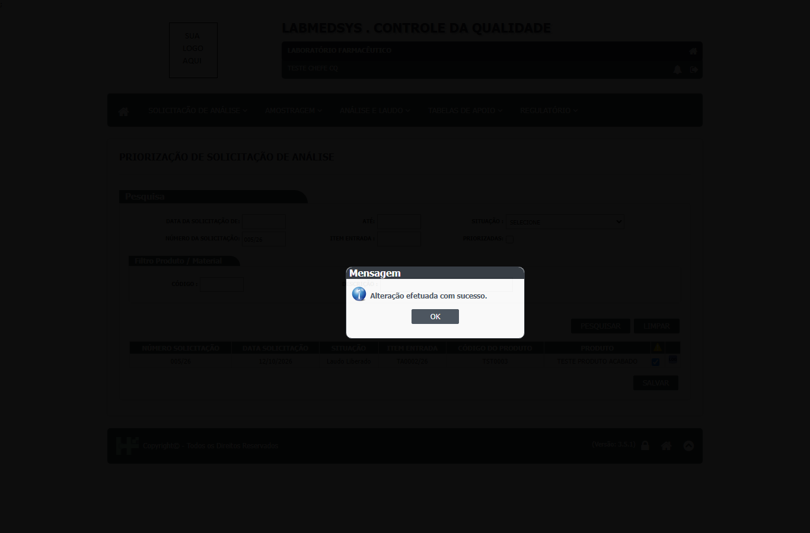
Figura 2: Priorização aceita para solicitação liberada.
Sugestão de correção
- Corrigir as validações e os textos citados.
Como confirmar a correção
Repetir o(s) caso(s) Casos novos CT-CQ-N-09, N-16, N-26, N-27, N-29 e N-30 nos passos acima e conferir o esperado.